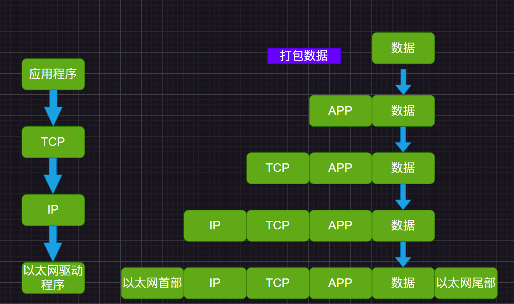

# 继承
# 继承的好处
- 提高代码复用性
- 扩展性和维护性提高
# 继承细节
-
子类继承父类所有属性和方法，但是父类私有成员必须通过父类提供的公共方法才能访问
-
子类必须调用父类构造器，完成父类初始化 —–子类构造器调用时，首先调用父类构造器
-
创建子类对象时，不管使用子类哪个构造器，默认总会调用父类的无参构造器，如果父类没有无参构造器，则必须在子类用 super 去指定使用哪个父类构造器完成对父类的初始化
-
super 使用需要放在构造器第一行，this 和 super 都需要放在构造器第一行，所以它俩不能同时存在构造器
-
Object 是 JAVA 所有类的基类，父类构造器的调用不限于直接父类，可以一直追溯到 Object 类
-
子类只能直接继承一个父类（单继承机制），但是可以多层继承
-
继承需要符合 is-a 逻辑（符合常理，不能人继承机器）
-
子类对象查找信息时（就近原则）：
-
首先查看子类局部代码是否有该成员，没有则查看子类是否具有该成员，如果子类有则返回信息
-
如果没有则追溯父类，以此类推追溯到 Object 类
-
Object 类如果还是没有则报错
-
# 访问权限修饰符
- public : 对所有类可见。使用对象：类、接口、变量、方法
- default (即默认，什么也不写）: 只有同包内的所有类可见，其他包不可见 ，不使用任何修饰符 使用对象：类、接口、变量、方法。
- protected : 同包内的所有类和其他包子类可见。protected 修饰的对象：变量、方法，类 注意：不能修饰外部类，可以修饰内部类。
- private : 在同一类内可见。使用对象：变量、方法，类 注意：不能修饰外部类，可以修饰内部类
# super
# 基本语法
- 访问父类的非 private 属性 super. 属性名
- 访问父类的非 private 方法 super. 方法名（参数列表）
- 访问父类构造器 super (参数列表），只能出现在构造器的第一行且只能出现一句
# super 细节
-
子类有和父类成员重名的属性和方法时，访问父类成员必须用 super
-
子类没有重名的属性或方法时，super（直接从父类找），this == 直接调用方法或属性（从本类开始找，效果等价）
# super 和 this 的比较
NO. 区别 this super 1 访问属性 访问本类属性，如果没有则向上追溯父类 从父类查找属性 2 调用方法 访问本类方法，如果没有则向上追溯父类 从父类查找方法 3 调用构造器 调用本类构造器，必须放在构造器首行 调用父类构造器，必须放在构造器首行 4 特殊 表示当前对象 子类中访问父类对象
# 方法重写
# 重写细节
- 子类方法的参数，方法名称要和父类完全一样
- 子类方法返回类型 == 父类方法返回类型 OR 父类方法返回类型的子类（ege: 父类 Object, 子类 String)
- 子类方法不能缩小父类方法的访问权限 （父：public 子：protected ——> 错误）
| 名称 | 发生范围 | 方法名 | 形参列表 | 返回类型 | 修饰符 |
|---|---|---|---|---|---|
| 重载 (overload) | 本类 | 必须一样 | 类型、个数至少一个不同 | 无要求 | 无要求 |
| 重写 (override) | 父子类 | 必须一样 | 必须相同 | 子类返回类型可以是父类返回类型的子类 | 子类方法不能缩小父类访问范围 |
# 多态
# 方法多态
- 方法的重载（同类）和重写（不同类，继承）体现多态
# 对象多态 (披着羊皮的狼)
-
importent
-
一个对象的编译类型和运行类型可以不一致
-
编译类型在定义对象时确定，不能改变
-
运行类型可以变化
-
编译类型看定义时
=左边 -
运行定义看定义时
=右边 -
Animal animal = new Cat()运行类型：Cat 编译类型：Animal
-
-
向上转型（父类引用指向子类对象）
- 可以调用父类的所有成员（遵守访问权限）
- 不能调用子类的特有成员（子类重写父类的方法可以调用）
- 在编译阶段由编译类型绝对能调用的成员
- 最终运行结果看子类（运行类型）的具体实现
- 调用方法时，从子类按照就近原则开始查找实现
-
向下转型（子类类型 引用名 = （子类类型）父类引用）
-
只能强转父类的引用，不能强转父类的对象
Animal animal = new Cat();
Cat cat = (Cat) animal;// 强转
编译类型 Cat = 运行类型 Cat
-
父类的引用必须指向当前目标类型的对象
引用 animal 原本就指向 Cat，则可以将其强制转换成 Cat 类型，而不能转成 Dog 类型（猫不是狗）
-
# 多态细节
- 属性没有重写，属性值看编译类型
public class Test{ | |
public static void main(String[] args) { | |
Base base = new Sub();// 向上转型 | |
System.out.println(base.count);// 结果为 10 | |
} | |
} | |
class Base { | |
int count = 10; | |
} | |
class Sub extends Base { | |
int count = 20; | |
} |
- instanceOf 比较操作符，判断对象类型是否为 XX 运行类型或 XX 运行类型的子类型
BB bb = new BB(); | |
System.out.println(bb instanceOf BB);//true |
3. 动态绑定机制（非常重要）
-
当调用对象方法时，该方法和该对象的内存地址 / 运行类型绑定
-
当调用对象属性时，没有动态绑定机制，哪里声明，哪里使用
package BASIC.extend;
public class dynamic_binding {
public static void main(String[] args) {
A a = new B();// 向上转型
System.out.println(a.sum());//30
System.out.println(a.sum1());//20
}}package BASIC.extend;
public class A {
public int i = 10;
public int sum() {
return geti() + 20;
}public int sum1() {
return i + 10;
}public int geti() {
return i;
}}package BASIC.extend;
public class B extends A{
public int i = 10;
// public int sum(){// return geti() + 10;// }// public int sum1(){// return i + 10;// }public int geti(){
return i;
}}执行
System.out.println(a.sum());//30时，首先查找 a 的 sum () 方法，发现 a 没有，故就近原则，查找父类的方法，发现父类存在此方法，但是其中 geti () 方法由于动态绑定机制，会调用回 a 的 geti () 方法；执行
System.out.println(a.sum1());//20时，首先查找 a 的 sum1 () 方法，发现 a 没有，故就近原则，查找父类的方法，发现父类存在此方法，但是其中 i 是对象属性，没有动态绑定机制，此时在父类声明，则使用父类的属性 i。
# Object
# == 运算符
- 既可以判断基本类型，又可以判断引用类型
- 基本类型判断：值是否相等
- 引用类型判断：地址是否相等，即判断是不是同一个对象
# equals 方法
- 是 Object 类的方法，只能判断引用类型
- 默认判断地址是否相等，子类往往重写此方法 —> 判断内容是否相等
# hashCode 方法
- 提高具有哈希结构的容器的效率
- 两个引用，如果指向同一个对象，哈希值一定相等，否则不同（即返回的值不同）
- 哈希值根据地址号由来，哈希值不等同于地址
# toString 方法
- 默认返回：全类名 + @ + 哈希值的十六进制字符串
- 一般重写方法输出属性信息
- 直接输出对象时，默认调用 toString 方法
System.out.println(monster)<==>monster.toString
# 类变量 / 方法
# 基本介绍
- 即 static 修饰的类成员
# 细节
- 同一个类所有对象共享一份类变量 / 方法
- 推荐使用类名。类变量 / 方法名访问
- 希望不创建实例也能使用方法，则可以将方法设置成静态方法，当做工具使用。如 Math,Arrary 类等
- 类方法和普通方法随着类加载而加载，将结构信息存储在方法区，类方法无 this 参数
- 静态方法只能访问静态成员（遵守访问权限）
- 非静态方法可以访问静态 / 非静态成员（遵守访问权限）
# main 方法
- 静态方法 main 可以访问所在类的静态成员，不能访问非静态成员
- 要访问非静态成员，在 main 方法里创建一个实例即可调用
# 代码块
-
static 代码块作用是对类初始化，随着类的加载执行，只执行一次，如果是普通代码块，每创建一个对象就执行一次
-
类加载的时机
- 创建对象实例时
- 创建子类对象实例，父类及父类往上的类也会被加载
- 使用类的静态成员时
-
调用顺序：
- 调用静态代码块和静态属性的优先级一样，如果有多个，按照定义的顺序调用，普通代码块和普通属性同理
-
构造器最前面隐含了 super () 和调用普通代码块，最后再执行构造器自己的代码，而静态代码块在类加载时就执行完毕，优先于普通代码块和构造器
-
创建子类对象时（含继承关系），调用顺序如下：
- 父类静态代码块和静态属性初始化（如果有多个，按照定义的顺序调用）
- 子类静态代码块和静态属性初始化（如果有多个，按照定义的顺序调用）
- 父类普通代码块和普通属性初始化（如果有多个，按照定义的顺序调用）
- 父类构造方法
- 子类普通代码块和普通属性初始化（如果有多个，按照定义的顺序调用）
- 子类构造方法
-
执行时被放在构造器除了 super 方法的最前面
# final
# 基础
- 修饰的类不可继承
- 修饰的父类某个方法不可重写
- 修饰的属性不可更改
- 修饰的局部变量不可更改
# 细节
- 修饰的属性叫常量，命名要大写
- 修饰的属性定义时必须赋初值，以后不能再更改（定义时，在构造器中，在代码块中）
- 修饰的静态属性只能在定义时或静态代码块中赋初值
- final 类不能被继承，但可以实例化对象
- 非 final 类含 final 方法，方法不能重写，可以被继承
- 如果一个类已经是 final 类，不用再将方法修饰成 final 方法
- final 不能修饰构造器
- final 和 static 搭配使用，不会导致类加载
# 抽象类
# 基础
-
当父类的一些方法不能确定时，可以用 abstract 关键字修饰方法，该方法是抽象方法，修饰的类是抽象类
-
一般抽象类会被继承
# 细节
- 抽象方法没有方法体
- 抽象类可以没有抽象方法，但可以有实现方法
- 抽象方法必须在抽象类中
- abstract 只能修饰类和方法
- 抽象类还是类，可以有任意成员
- 一个类继承了抽象类，必须实现所有的抽象方法，否则它就必须是抽象类
# 接口
# 基础
-
概念：接口给出一些没有实现的方法，封装到一起，某个类要使用时，根据情况实现这些抽象方法
-
语法：
interface 接口名{……} -
class 类名 implements 接口{
属性；
方法；
必须实现的接口抽象方法；
} -
接口可以有静态方法，默认方法
-
default public void ok(){} // 默认方法
public static void okk(){} // 静态方法
# 细节
- 接口不能被实例化
- 接口中所有方法是 public 方法，抽象方法不必再用 abstract 修饰
- 一个普通类使用接口，必须实现接口的所有方法
- 抽象类实现接口，可以不实现接口方法
- 一个类可以实现多个接口
- 接口的属性只能是 final，默认隐藏修饰
public static final, 如 int i = 1; 默认 public static final int i = 1, 因此属性必须初始化 (final) - 接口属性访问：
接口名.属性名 - 接口可以继承多个其它接口，但不能继承类
- 接口修饰符只能是 public 或默认（什么也不写），和类一样
# 接口 VS 继承
- 解决的问题不同
- 继承：代码的复用性和可维护性
- 接口：设计各种规范方法，让类实现
- 继承是 is-a 关系，接口是 like-a 关系，接口更灵活
- 接口在一定程度实现代码解耦
package basic.interface_all.demo; | |
/** | |
* @author FENGXIN | |
* 继承和类的区别 | |
* 继承是子类生来就有的技能 | |
* 接口相当于在后期学习扩展获得的技能 | |
*/ | |
public class extendsVSinterface { | |
public static void main(String[] args) { | |
monkeySon monkey = new monkeySon("悟空"); | |
monkey.climb(); | |
monkey.swimming(); | |
} | |
} | |
/** | |
* fish 接口 | |
*/ | |
interface fish { | |
void swimming(); | |
} | |
/** | |
* monkey 父类 | |
*/ | |
class monkey { | |
String name; | |
monkey(String name) { | |
this.name = name; | |
} | |
public void climb() { | |
System.out.println(name + "会爬树"); | |
} | |
public String getname() { | |
return this.name; | |
} | |
} | |
/** | |
* monkeySon 子类 | |
*/ | |
class monkeySon extends monkey implements fish { | |
monkeySon(String name) { | |
super(name); | |
} | |
// 子类生来就有的技能 | |
@Override | |
public void climb() { | |
System.out.println(getname() + "会爬树"); | |
} | |
// 子类后期学习获得技能 | |
@Override | |
public void swimming() { | |
System.out.println(getname() + "会游泳"); | |
} | |
} |
# 接口的多态特性
- 多态参数
package basic.interface_all.demo; | |
/** | |
* @author FENGXIN | |
* 接口的多态参数 | |
*/ | |
public class polParameter { | |
public static void main(String[] args) { | |
// 创建手机和相机对象 | |
// 接口类型的变量 computer 可以指向实现了接口的类的对象实例 | |
computer computer = new phone(); | |
computer.print(); | |
computer = new camera(); | |
computer.print(); | |
} | |
} | |
/** | |
* computer | |
*/ | |
interface computer { | |
void print(); | |
} | |
/** | |
* phone | |
*/ | |
class phone implements computer { | |
public void print() { | |
System.out.println("手机在运行..."); | |
} | |
} | |
/** | |
* camera | |
*/ | |
class camera implements computer { | |
public void print() { | |
System.out.println("相机在运行..."); | |
} | |
} |
- 多态数组
computer[] computers = new computer[2]; | |
computers[0] = new phone(); | |
computers[1] = new camera(); |
- 接口存在多态传递现象
- 由于 object <— camera ,phone 实现接口的同时，也相当于实现了 object
//object | |
interface object { | |
void hi(); | |
} | |
//computer | |
interface computer extends object { | |
void print(); | |
} | |
//phone | |
class phone implements computer { | |
//phone 类实现了 object 接口，并实现了接口中的方法 | |
@Override | |
public void hi() { | |
System.out.println("手机object"); | |
} | |
//phone 类实现了 computer 接口，并实现了接口中的方法 | |
@Override | |
public void print() { | |
System.out.println("手机在运行..."); | |
} | |
//phone 类还实现了额外的 call 方法 | |
public void call() { | |
System.out.println("手机在打电话..."); | |
} | |
} | |
//camera | |
class camera implements computer { | |
//camera 类实现了 object 接口，并实现了接口中的方法 | |
@Override | |
public void hi() { | |
System.out.println("相机object"); | |
} | |
//camera 类实现了 computer 接口，并实现了接口中的方法 | |
@Override | |
public void print() { | |
System.out.println("相机在运行..."); | |
} | |
} | |
public class polParameter { | |
public static void main(String[] args) { | |
// 多态传递 | |
object object = new phone(); | |
object.hi(); | |
} | |
} |
# 内部类
# 基础
一个类的内部又完整嵌套了另一个类的结构
类的 5 大成员
- 属性
- 方法
- 构造器
- 代码块
- 内部类
class outer{// 外部类 | |
class inner{// 内部类 | |
} | |
} | |
class otherouter{// 外部其他类 | |
} |
分类
-
定义在外部类局部位置（比如方法内）
- 局部内部类（有类名）
- 匿名内部类（没有类名，重点）
-
定义在外部类的成员位置
- 成员内部类（没有 static 修饰）
- 静态内部类（有 static 修饰）
# 局部内部类
# 细节
- 局部内部类定义在外部类的局部位置（方法 / 代码块）
- 可以直接访问外部类的所有成员，包括私有的
- 局部内部类不能添加访问修饰符，但可以用
final修饰（看作变量就好理解） - 作用域：仅在定义它的方法或者代码块中
- 外部类 —— 访问 —— 局部内部类成员（创建对象再访问，必须在作用域内）
- 外部其它类 —— 不能访问 —— 局部内部类（局部内部类的地位是局部变量）
- 外部类成员 与 内部类成员 重名，默认遵循就近原则，访问外部类成员用
外部类名.this.成员
package basic.localInnerClass.demo; | |
public class LocalInnerClass { | |
public static void main(String[] args) { | |
Outer outer = new Outer(); | |
outer.fun1(); | |
} | |
} | |
/** | |
* Outer | |
*/ | |
class Outer { | |
// 外部类属性和方法 | |
private int n = 100; | |
private void fun2() { | |
System.out.println("内部类成功直接调用外部类私有成员"); | |
} | |
public void fun1() {// 内部类作用域：仅在定义它的方法或者代码块中 | |
// 局部内部类定义在外部类的局部位置（方法 / 代码块） | |
// 局部内部类不能添加访问修饰符，但可以用 `final` 修饰（看作变量就好理解） | |
final class Inner {// 局部内部类 | |
// 外部类成员 与 内部类成员 重名，默认遵循就近原则， | |
// 访问外部类成员用 `外部类名.this. 成员` | |
private int n = 200; | |
public void f1() { | |
// 可以直接访问外部类的所有成员，包括私有的 | |
System.out.println("内部类方法f1执行..."); | |
System.out.println("Inner's n = " + n + " 就近原则（Outer's n = 100,Inner's = 200)"); | |
System.out.println("Outer's n = " + Outer.this.n + " Outer.this.n访问外部类重名成员"); | |
fun2(); | |
} | |
} | |
// 外部类 —— 访问 —— 局部内部类成员（创建对象再访问，必须在作用域内） | |
Inner inner = new Inner(); | |
inner.f1(); | |
}// 内部类作用域：仅在定义它的方法或者代码块中 | |
} |
Outer.this <==> outer 对象
this <==> Inner 对象
# 匿名内部类
# 细节
-
定义在外部类的局部位置（方法或代码块），没有类名），本质是类或对象
-
语法：
new 类/接口（参数列表）{类体}； -
需求：只使用一次，后面不再使用
-
匿名内部类使用一次即死亡，但是它的对象可以一直使用
-
编译类型是接口或类，运行类型是匿名内部类
-
使用时，底层会实现一个
外部类$ + 序号的类实现接口或继承类，并返回实例地址 -
匿名内部类既是类，也是
对象，可以有两种方式调用方法-
创建匿名内部类的对象调用
-
}. 方法；
-
A a = new A("feng") {
@Overridepublic void show() {
System.out.println("重写了匿名内部类方法...");
System.out.println("动态绑定运行类型...");
System.out.println("就近原则（");
}}.show();
-
-
-
作用域：定义的方法或代码块，即外部其它类不能访问匿名内部类
-
外部类和匿名内部类成员重名，默认就近原则，使用外部类成员：
外部类名.this.成员 -
应用场景：匿名内部类可以传递实参
# 代码时间
package basic.localInnerClass.demo; | |
/** | |
* 基于接口 匿名内部类 | |
*/ | |
public class anonymityInnerClass01 { | |
public static void main(String[] args) { | |
Outer01 outer01 = new Outer01(); | |
outer01.fun01(); | |
} | |
} | |
/** | |
* 接口 A | |
*/ | |
interface A1 { | |
void show(); | |
} | |
/** | |
* Outer01 | |
*/ | |
class Outer01 { | |
public void fun01() { | |
// 方法里的匿名内部类 | |
/* | |
* java 底层创建： | |
* class Outer01$1 implements A1 { | |
* @Override | |
* public void show () { | |
* System.out.println ("重写了接口方法..."); | |
* } | |
* } | |
* // 结束后返回 Outer01$1 类的实例给引用 a，Outer01$1 死亡，但 a 可以继续多次使用 | |
*/ | |
A1 a = new A1() { | |
@Override | |
public void show() { | |
System.out.println("重写了接口A1方法..."); | |
} | |
}; | |
a.show(); | |
} | |
} |
package basic.localInnerClass.demo; | |
/** | |
* 基于类的匿名内部类 | |
*/ | |
public class anonymityInnerClass02 { | |
public static void main(String[] args) { | |
Outer02 outer02 = new Outer02(); | |
outer02.fun02(); | |
} | |
} | |
/** | |
* A | |
*/ | |
class A { | |
A(String name) { | |
System.out.println("接收了name = " + name); | |
} | |
public void show() { | |
System.out.println("这是A类..."); | |
} | |
} | |
/** | |
* Outer02d | |
*/ | |
class Outer02 { | |
private int a02 = 20; | |
public void fun02() { | |
/* | |
* java 底层创建： | |
* class Outer02$1 extends A { | |
* @Override | |
* public void show () { | |
* System.out.println ("重写了匿名内部类方法..."); | |
* System.out.println ("动态绑定运行类型..."); | |
* System.out.println ("就近原则（"); | |
* } | |
* // 结束后返回 Outer02$1 的实例给引用 a，Outer02$1 死亡，但 a 可以继续多次使用 | |
*/ | |
// 传入 String 类型参数给构造器 | |
A a = new A("feng") { | |
private int a02 = 30; | |
@Override | |
public void show() { | |
System.out.println("重写了匿名内部类方法..."); | |
System.out.println("动态绑定运行类型是：" + getClass()); | |
System.out.println("就近原则(匿名内部类a02 = 30) 验证：a02 = " + a02); | |
System.out.println("使用外部类成员(外部类a02 = 20 验证：a02 = " + Outer02.this.a02); | |
} | |
}; | |
a.show();// 动态绑定，运行类型是 Outer02$1 | |
} | |
} |
package basic.localInnerClass.demo; | |
/** | |
* 基于抽象类的匿名内部类 | |
*/ | |
public class anonymityInnerClass03 { | |
public static void main(String[] args) { | |
Outer03 outer03 = new Outer03(); | |
outer03.fun03(); | |
} | |
} | |
/** | |
* Abstract_A 抽象类 | |
*/ | |
abstract class Abstract_A { | |
abstract void show(); | |
} | |
/** | |
* Outer03 | |
*/ | |
class Outer03 { | |
public void fun03() { | |
/** | |
* 匿名内部类 | |
*/ | |
Abstract_A abstract_A = new Abstract_A() { | |
/** | |
* java 底层创建： | |
* class Outer03$1 extends A { | |
* | |
* @Override | |
* public void show () { | |
* System.out.println ("重写了抽象类 Abstract_A 的方法..."); | |
* } | |
* 结束后返回 Outer03$1 的实例给 abstract_A 引用，Outer03$1 死亡，但 abstract_A 可以继续多次使用 | |
*/ | |
// 重写抽象类的抽象方法 | |
@Override | |
public void show() { | |
System.out.println("重写了抽象类Abstract_A的方法..."); | |
} | |
}; | |
abstract_A.show(); | |
} | |
} |
package basic.localInnerClass.demo; | |
/** | |
* 匿名内部类的实践一：传递实参 | |
*/ | |
public class anonymityInnerClass04 { | |
public static void main(String[] args) { | |
// 匿名内部类传递实参 | |
test(new A04() { | |
@Override | |
public void show() { | |
System.out.println("匿名内部类传递了实参..."); | |
} | |
}); | |
} | |
// 定义静态方法，main 方法是静态方法，main 只能调用本类静态成员 | |
public static void test(A04 a04) { | |
a04.show(); | |
} | |
} | |
/** | |
* 接口 A | |
*/ | |
interface A04 { | |
void show(); | |
} |
package basic.localInnerClass.demo; | |
/* | |
* 有一个铃声接口 Bell， 里面有个 ring 方法。 | |
* 有一个手机类 cellPhone， 具有闹钟功能 alarmClock, 参数是 Bell 类型 | |
* 测试手机类的闹钟功能，通过匿名内部类 (对象) 作为参数，打印：懒猪起床了 | |
* 再传入另一个匿名内部类 (对象)，打印：小伙伴上课了 | |
*/ | |
public class Ring { | |
public static void main(String[] args) { | |
cellPhone cellphone = new cellPhone(); | |
// 匿名内部类传参 | |
cellphone.alarmClock(new Bell() { | |
public void ring() { | |
System.out.println("懒猪起床了"); | |
} | |
}); | |
cellphone.alarmClock(new Bell() { | |
public void ring() { | |
System.out.println("小伙伴上课了"); | |
} | |
}); | |
} | |
} | |
/** | |
* Bell 接口 | |
*/ | |
interface Bell { | |
void ring(); | |
} | |
/** | |
* cellPhone | |
*/ | |
class cellPhone { | |
public void alarmClock(Bell bell) { | |
bell.ring(); | |
} | |
} |
# 成员内部类
# 细节
- 在外部类的成员位置上
- 可以直接访问外部类的所有成员
- 可以添加任意修饰符（public,rotected,private, 默认）
- 作用域：整个外部类的类体，外部类访问内部类成员：在外部类成员方法创建内部类对象，再调用内部类方法
- 外部其他类访问成员内部类：
- 第一种方式 固定语法
- 第二种方式，在外部类创建方法返回内部类对象
package basic.localInnerClass.demo; | |
public class memberInnerClass { | |
public static void main(String[] args) { | |
// 调用成员内部类的成员 | |
Outer05 member = new Outer05(); | |
member.memberFun01(); | |
// 外部类访问成员内部类 | |
// 第一种方式 固定语法 | |
System.out.println("------------------------------------"); | |
Outer05.memberInner01 inner01 = member.new memberInner01(); | |
inner01.show01(); | |
// 第二种方式，在外部类创建方法返回内部类对象，通过外部类对象调用非静态方法 | |
System.out.println("------------------------------------"); | |
Outer05.memberInner01 inner02 = member.returnmember(); | |
inner02.show02(); | |
} | |
} | |
/** | |
* Outer05 | |
*/ | |
class Outer05 { | |
private int m1 = 100; | |
private String name = "member"; | |
/** | |
* memberInner01 | |
*/ | |
public class memberInner01 { | |
public void show() { | |
System.out.println("成员内部类..."); | |
System.out.println("直接调用外部类成员（私有）：" + "m1 = " + m1 + " name: " + name); | |
} | |
public void show01() { | |
System.out.println("外部其他类访问成员内部类第一种方式"); | |
} | |
public void show02() { | |
System.out.println("外部其他类访问成员内部类第二种方式"); | |
} | |
} | |
// 写一个方法供 mian 函数调用 | |
public void memberFun01() { | |
memberInner01 mInner01 = new memberInner01(); | |
mInner01.show(); | |
} | |
// 返回内部类对象 | |
public memberInner01 returnmember() { | |
return new memberInner01(); | |
} | |
} |
# 静态内部类
# 细节
- 在外部类的成员位置上
- 必须有
static修饰，可以添加任意修饰符（public,rotected,private, 默认） - 可以直接访问外部类的所有静态成员，但不能访问非静态成员
- 作用域：整个外部类的类体
- 外部类访问静态内部类的三种方式
- 外部类和静态内部类成员重名时，默认就近原则，访问外部类成员用
外部类名.外部成员
package basic.localInnerClass.demo; | |
public class staticInnerClass { | |
public static void main(String[] args) { | |
Outer06 outer06 = new Outer06(); | |
outer06.fun04(); | |
// 外部其他类访问静态内部类的三种方式 | |
// 方式一 ---- 固定语法 | |
System.out.println("------------------------------------"); | |
Outer06.staticClass inClass1 = new Outer06.staticClass(); | |
inClass1.show03(); | |
// 方式二 ---- 在外部类创建方法返回内部类对象，通过外部类对象调用非静态方法 | |
System.out.println("------------------------------------"); | |
Outer06.staticClass inClass2 = outer06.fun05(); | |
inClass2.show04(); | |
System.out.println("------------------------------------"); | |
// 方式三 ---- 通过外部类直接调用静态方法返回静态类对象 | |
Outer06.staticClass inClass3 = Outer06.fun06(); | |
inClass3.show05(); | |
} | |
} | |
/** | |
* Outer06 | |
*/ | |
class Outer06 { | |
private static int n = 1000; | |
/** | |
* staticClass | |
*/ | |
static class staticClass { | |
private int n = 10; | |
public void show() { | |
System.out.println("静态内部类访问外部类静态成员n = " + Outer06.n); | |
System.out.println("静态内部类访问本类静态成员n = " + n); | |
} | |
public void show03() { | |
System.out.println("外部类第一种访问内部类方式..."); | |
} | |
public void show04() { | |
System.out.println("外部类第二种访问内部类方式..."); | |
} | |
public void show05() { | |
System.out.println("外部类第三种访问内部类方式..."); | |
} | |
} | |
public void fun04() { | |
staticClass staticclass = new staticClass(); | |
staticclass.show(); | |
} | |
// 编写方法返回静态内部类对象 | |
public staticClass fun05() { | |
return new staticClass(); | |
} | |
// 静态方法返回静态内部类对象 | |
public static staticClass fun06() { | |
return new staticClass(); | |
} | |
} |
# 枚举
# 自定义枚举类型
- 将构造器私有化，防止被直接 new
- 不设置 set () 方法，防止被篡改，可以设置 get () 方法
- 暴露对象 public，并用 final + static 修饰对象优化
- 枚举对象名大写
package basic.enumeration.demo; | |
/** | |
* 自定义枚举类型 | |
*/ | |
public class selfDefineEnumeration { | |
public static void main(String[] args) { | |
System.out.println(Season.SPRING); | |
System.out.println(Season.SUMMER); | |
System.out.println(Season.AUTUMN); | |
System.out.println(Season.WINTER); | |
} | |
} | |
/** | |
* Season | |
*/ | |
class Season { | |
private String name; | |
private String desc; | |
// 定义固定对象 暴露对象，final + static 底层优化 | |
public final static Season SPRING = new Season("春天", "温暖"); | |
public final static Season SUMMER = new Season("夏天", "炎热"); | |
public final static Season AUTUMN = new Season("秋天", "凉爽"); | |
public final static Season WINTER = new Season("冬天", "寒冷"); | |
// 将构造器私有化 并且不设置 set 方法 | |
private Season(String name, String desc) { | |
this.name = name; | |
this.desc = desc; | |
} | |
public String getName() { | |
return name; | |
} | |
public String getDesc() { | |
return desc; | |
} | |
@Override | |
public String toString() { | |
return "The name:" + this.name + " The Desc:" + this.desc; | |
} | |
} |
# 使用 enum 关键字实现枚举
# 基础
- 使用 enum 开发一个枚举类时，默认继承 Enum 类（终端 javap ***.class 验证）
- 传统的
public final static Season SPRING = new Season("春天", "温暖");简化为SPRING(“春天”，“温暖”); - 使用无参构造器创建枚举对象，实参列表和小括号都可以省略
- 有多个枚举对象用
,间隔，最后;结尾 - 枚举对象必须放在枚举类体的行首
- Enum 的
toString()方法（子类可以重写）返回的是枚举类对象的 name，如 SPRING
public class selfDefineEnumeration02 { | |
public static void main(String[] args) { | |
System.out.println(Season2.SPRING); | |
System.out.println(Season2.SUMMER); | |
System.out.println(Season2.AUTUMN); | |
System.out.println(Season2.WINTER); | |
} | |
} | |
/** | |
* Season | |
*/ | |
enum Season2 { | |
// 有多个枚举对象用 `,` 间隔，最后 `;` 结尾 | |
// 枚举对象必须放在枚举类体的行首 | |
SPRING("春天", "温暖"), SUMMER("夏天", "炎热"), AUTUMN("秋天", "凉爽"), WINTER("冬天", "寒冷"), WHAT// 使用无参构造器创建枚举对象，实参列表和小括号都可以省略 | |
; | |
private String name; | |
private String desc; | |
Season2() { | |
} | |
...... |
# 常用方法
- name ()：返回当前对象名，子类不能重写
- ordinal ()：返回位置，默认从 0 开始
- values ()：返回包含所有枚举常量的一个数组
- valueOf ()：将字符串转换成枚举常量（常量须存在类中）
- compareTo：比较两个，枚举常量的位置
package basic.enumeration.demo; | |
/** | |
* Enum 类的方法演示 | |
*/ | |
public class selfDefineEnumeration03 { | |
public static void main(String[] args) { | |
//name ()：返回当前对象名，子类不能重写 | |
System.out.println(Season2.SPRING.name()); | |
//ordinal ()：返回位置，默认从 0 开始 | |
System.out.println("WINTER's position:" + Season2.WINTER.ordinal()); | |
//values ()：返回包含所有枚举常量的一个数组 | |
Season2[] values_ = Season2.values(); | |
for (Season2 season2 : values_) { | |
System.out.println(season2); | |
} | |
//valueOf ()：将字符串转换成枚举常量（常量须存在类中） | |
Season2 value = Season2.valueOf("SUMMER"); | |
System.out.println(value); | |
//compareTo：比较两个，枚举常量的位置 | |
System.out.println(Season2.WINTER.compareTo(Season2.SPRING)); | |
} | |
} | |
/** | |
* Season | |
*/ | |
enum Season2 { | |
// 有多个枚举对象用 `,` 间隔，最后 `;` 结尾 | |
// 枚举对象必须放在枚举类体的行首 | |
SPRING("春天", "温暖"), SUMMER("夏天", "炎热"), AUTUMN("秋天", "凉爽"), WINTER("冬天", "寒冷"), WHAT// 使用无参构造器创建枚举对象，实参列表和小括号都可以省略 | |
; | |
private String name; | |
private String desc; | |
Season2() { | |
} | |
// 将构造器私有化 并且不设置 set 方法 | |
private Season2(String name, String desc) { | |
this.name = name; | |
this.desc = desc; | |
} | |
public String getName() { | |
return name; | |
} | |
public String getDesc() { | |
return desc; | |
} | |
@Override | |
public String toString() { | |
return "The name:" + this.name + " The Desc:" + this.desc; | |
} | |
} |
# 使用细节
- 使用 enum 关键字后，就不能再继承其它类，因为 enum 隐式继承 Enum
- 枚举类和普通类一样可以实现接口
enum 类名 implements 接口1...{}可重写接口方法
# 注解
# @Override
- 限定某个方法，重写父类方法，该注解只能用于方法
- 如果写了此注解，编译器会判断是否重写成功，没有则编译错误
# @Deprecated
- 用于某个程序元素已经过时（类，方法等）
- 不推荐使用，但仍可以使用
# @SuppressWarnings
- 抑制编译器警告
- unchecked 忽略没有检查的警告
- rawtypes 忽略没有指定泛型的警告
- unused 忽略没有使用某个变量的警告
- 作用范围和放置的位置有关
# 元注解（了解）
-
Retention 指定注解的作用范围（SOURCE CLASS RUNTIME）
- RetentionPolicy.SOURCE: 编译器使用后，丢弃这种策略的注解
- RetentionPolicy.CLASS：编译器把注解保存在 class 文件，JVM 不会保留此注解，这是默认值
- RetentionPolicy.RUNTIME: 编译器把注解保存在 class 文件，JVM 保留此注解，可以用反射获取该注解信息
-
Target 指定注解可以使用在哪些地方（字段，类，方法，包等）
-
Documented 修饰注解，指定注解是否会在 javadoc 体现，即生成文档时会保留在其中
-
Inherited 子类继承父类注解
# 异常
# 基本概念
将程序执行中发生的不正常情况称为异常，开发过程中语法错误和逻辑错误不是异常
- 异常 (Exception) 分为两类
- Error（错误）：Java 虚拟机无法解决的严重问题，如 JVM 系统内部错误、资源耗尽等。StackOverflowError（栈溢出）和 OOM（OutOfMemoryError），Error 是严重错误，程序会崩溃
- Exception：因为编程错误或偶然外在因素导致的一般性问题，可以使用针对性代码处理
- 运行时异常 (RuntimeException)，编译器检查不出来
- 编译时异常 (……)，编译器要求必须处理的异常
# 异常体系图
# 常见的运行时异常
# NullPointerException（空指针异常）
- 当程序试图在需要使用对象的地方而对象为 null 时，抛出异常
# ArithmeticException（数学运算异常）
- 当出现异常运算条件时抛出异常，如除以 0
# ArrayIndexOutException（数组下标越界异常）
- 索引为负数或大于等于数组大小时抛出异常
# ClassCastException（类型转换异常）但对象不是实例的子类时抛出异常
- 强转时但对象不是实例的子类时抛出异常
A a = new B(); | |
C c = (C) a;// 抛出异常 |
# NumberFormatException（数字格式不正确异常）
- 试图将字符串转换成一种数值类型但不能转换成适当格式时抛出异常
String name = "枫"； | |
int num = Integer.parseInt(name);// 抛出异常 |
# 异常处理
# try-catch-finally
-
程序员在代码中捕获发生的异常自行处理
-
可以有多个 catch，捕获不同的异常，要求父类在后，子类在前（先捕捉子类异常，再捕捉父类异常）：
-
try{
......
}catch(NullPointerException e) {
......
}catch(Exception e){
......
}
-
-
允许 try - finally 配合使用，没有捕获异常，程序会直接崩溃。应用于执行一段代码是否发生异常都必须执行某个业务逻辑
package basic.try_catch_finally.demo; | |
/** | |
* 测试空指针异常 Exception | |
*/ | |
public class ExceptionForNull { | |
public static void main(String[] args) { | |
String name = "FENG"; | |
name = null; | |
try { | |
System.out.println(name.length()); | |
} catch (Exception e) { | |
System.out.println(e.getMessage()); | |
} | |
} | |
} |
# 细节
try{ | |
// 可能发生异常的代码块放在这里 | |
}catch(Exception e){ | |
// 捕获到异常 | |
// 系统将异常封装成 Exception 对象 e，传递给 catch 方法， | |
// 得到异常对象后程序员自行处理 | |
// 如果没有发生异常则不执行 catch 代码块 | |
}finally{ | |
// 可有可省略 | |
// 不管 try 代码块是否执行，finally 始终都要执行 | |
// 通常把资源的释放放在这里 | |
} |
# throws
- 将发生的异常抛出交给调用方法处理，最顶级的处理者是 JVM
- JVM 输出异常信息，退出程序
- 如果程序员没有显式处理异常，系统默认使用 throws
- 如果一个方法可能生成某种异常，但不能确定如何处理，则此方法应显式抛出异常，由调用该方法的调用者处理
- 在方法声明中用 throws 语句可以声明抛出异常的列表，throws 后面的异常类型可以是方法中产生的异常类型，也可以是它的父类
# 细节
- 编译异常必须处理，可以使用 try-catch 或 throws
- 子类重写父类方法时，规定：子类重写的方法抛出的
异常类型 == 父类异常类型，或父类抛出异常类型的子类型 - try-catch 和 throws 选择一个处理就行
# 自定义异常
- 定义类
- 自定义异常类名继承 Exception 或 RuntimeException (一般继承这个)
- 如果继承 Exception，属于编译异常
- 如果继承 RuntimeException，属于运行时异常
package basic.try_catch_finally.demo; | |
public class CustomException { | |
public static void main(String[] args) { | |
int YEAR = -5; | |
if (YEAR <= 0) { | |
throw new YearException("年份不能是负数！");// 把信息传给异常类的构造器 | |
} | |
} | |
} | |
// 自定义异常类 | |
class YearException extends RuntimeException { | |
YearException(String year) { | |
super(year);// 传递给父类信息 | |
} | |
} |
# throw 和 throws 的区别
| 意义 | 位置 | 后面跟 | |
|---|---|---|---|
| throws | 异常处理的一种方式，表示出现异常的一种可能性，并不一定会发生这种异常 | 方法声明处，可以是异常列表 | 异常类型 |
| throw | 手动生成异常对象的关键字 | 方法体中 | 异常对象 |
public void fun1() throws ArithmeticException { | |
} | |
public void fun2(){ | |
throw new RuntimeException("信息..."); | |
} |
# 常用类
# 包装类 (Wrapper)
# 八大包装类
# 包装类和基本数据类型的转换（装箱和拆箱）
// jdk5 以前，手动装、拆箱 | |
// 手动装箱 | |
Integer i1 = new Integer(10); | |
Integer i2 = Integer.valueOf (20); | |
// 手动拆箱 | |
int j1 = i1.intValue(); | |
int j2 = i2.intValue(); | |
//jdk5 以后，自动装、拆箱 | |
// 自动装箱 | |
Integer i3 = 30; | |
// 自动拆箱 | |
int j3 = i3; |
# 包装类和 String 相互转换
package com.fengxin.basic.wrapper;/** | |
* @author FENGXIN | |
* @data 2024.4.28 | |
**/ | |
/** | |
* @author FENGXIN | |
* @date 2024.4.28 | |
* Integer 和 String 类的相互转换，其他包装类类似 | |
**/ | |
public class Integer_String { | |
public static void main (String[] args) { | |
// Integer 转 String | |
// 1. 使用 toString () 方法 | |
Integer integer1 = 10; | |
String str1 = integer1.toString(); | |
// 2. 使用 String.valueOf () 方法 | |
Integer integer2 = 20; | |
String str2 = String.valueOf (integer2); | |
// String 转 Integer | |
// 1. 使用 Integer.parseInt () 方法 | |
String str4 = "40"; | |
Integer integer4 = Integer.parseInt (str4); | |
// 2. 使用 Integer.valueOf () 方法 | |
String str5 = "50"; | |
Integer integer5 = Integer.valueOf (str5); | |
// 3. 使用 Integer 的构造器 | |
String str6 = "60"; | |
Integer integer6 = new Integer (str6); | |
} | |
} |
# 包装类 Integer 和 Charater 的常用方法（举例）
public class Integermethods { | |
public static void main (String[] args) { | |
System.out.println ("Integer的最大值："+Integer.MAX_VALUE);// 获取最大值 | |
System.out.println ("Integer的最小值："+Integer.MIN_VALUE);// 获取最小值 | |
System.out.println (Character.isDigit (5));// 判断是否为数字 | |
System.out.println (Character.isLetter ('a'));// 判断是否为字母 | |
System.out.println (Character.isUpperCase ('A'));// 判断是否为大写字母 | |
System.out.println (Character.isLowerCase ('a'));// 判断是否为小写字母 | |
System.out.println (Character.toUpperCase ('a'));// 转换为大写 | |
System.out.println (Character.toLowerCase ('A'));// 转换为小写 | |
} | |
} |
# Integer 面试
/** | |
* 首先，检查传入的 int 值 i 是否在 IntegerCache.low（-128）和 IntegerCache.high（127）之间。 | |
* 如果在范围内，直接从 IntegerCache.cache 数组中取出对应位置的 Integer 对象， | |
* 并将其加 - IntegerCache.low 偏移量，以匹配原始的 int 值。 | |
* 如果传入的 int 值 i 不在范围内，说明是一个新的值，需要创建一个新的 Integer 对象。 | |
* @IntrinsicCandidate | |
* public static Integer valueOf (int i) { | |
* if (i >= IntegerCache.low && i <= IntegerCache.high) | |
* return IntegerCache.cache [i + (-IntegerCache.low)]; | |
* return new Integer (i); | |
* } | |
* | |
* private static final class IntegerCache { | |
* static final int low = -128; | |
* static final int high; | |
* ...... | |
* ...... | |
* Integer [] c = new Integer [size]; | |
* int j = low; | |
* for (int i = 0; i < c.length; i++) { | |
* c [i] = new Integer (j++); | |
* } | |
*/ | |
public static void main(String[] args) { | |
Integer i1 = new Integer(10); | |
Integer i2 = new Integer(10); | |
Integer i3 = 10; | |
Integer i4 = 10; | |
Integer i5 = -127; | |
Integer i6 = -127; | |
Integer i7 = 128; | |
Integer i8 = 128; | |
int i9 = 10; | |
System.out.println(i1 == i2); //false new 关键字的两个对象地址不同，== 比较的是地址 | |
System.out.println(i3 == i4); //true 自动装箱，编译器自动调用 valueOf 方法，缓存 [-128,127]，范围内直接比较值，否则返回 new 对象 为 false | |
System.out.println(i5 == i6); //true 自动装箱，编译器自动调用 valueOf 方法，缓存 [-128,127], 范围内直接比较值，否则返回 new 对象 为 false | |
System.out.println(i7 == i8); //true 自动装箱，编译器自动调用 valueOf 方法，缓存 [-128,127], 范围内直接比较值，否则返回 new 对象 为 false | |
System.out.println(i1 == i9); //true 自动拆箱，比较值 (含基本类型的则自动拆箱比较值) |
# String
# String 结构
-
String 对象用于保存字符串，即字符串序列
-
“jack” 字符串常量，即字符串序列
-
字符串的字符不论是字母还是汉字，都是占用两个字节
-
String 有很多构造器
String s1 = new String();String s2 = new String(String original);
-
String 类实现了 Serializable 接口，可以串行化，允许在网络传输
-
String 类实现了 Comparable 接口，可以比较大小
-
String 是 final 类，不能被继承
-
String 有属性
private final char value[];value 存放字符串内容，不可以修改地址，但可以修改地址所指向的内容
# String 对象的两种创建方式
String s1 = "fx";
先从常量池检查是否有 “fx” 数据空间，有：s1 直接指向；没有：重新创建 “fx”, 然后指向。s1 指向常量池的空间地址
String s1 = "fx"; | |
String s2 = "fx"; | |
s1 == s2;//true 指向常量池同一个对象 |
String s2 = new String("fx");
先在堆中创建空间，里面维护 value 属性，指向常量池 “fx” 空间；若没有 “fx”，则重新创建 “fx”，如果有，value 直接指向。s2 指向堆的地址

调用
intern方法时，如果池中包含一个等于此 String 对象的字符串（用equals(Object)方法确定），返回池中的字符串地址；否则将此对象添加到常量池中并返回 String 对象的引用最终返回常量池的地址
public static void main (String[] args) { | |
String a = "fx";// 指向常量池 | |
String b = new String ("fx");// 指向堆内存 | |
System.out.println (a.equals (b));//true 比较字符串内容 | |
System.out.println (a == b);//false 比较引用地址 | |
System.out.println (a == b.intern ());//true 比较引用地址 | |
System.out.println (b == b.intern ());//false 比较引用地址 | |
} |
# 字符串的特性
- String 是 final 类，代表不可变的字符序列
- 字符串是不可变的，一个字符串对象一旦被分配，其内容不可变
String s1 = "hello"; | |
s1 = "name";// 创建 2 个对象，s1 从 "hello" 指向 "name"，hello 和 name 存在于常量池中 |
- 编译器做优化
String a = "hello" + "abc"==>String a = "helloabc";
String a = "hello" + "abc";//只有一个对象
- StringBuilder
String a = "hello";//1 | |
String b = "abc";//2 | |
String c = a + b;//3 个对象 | |
// 先创建 StringBuilder sb = StringBuilder (); | |
// 执行 sb.append ("hello"); | |
// 执行 sb.append ("abc"); | |
//String c = sb.toString ();toString 返回的是 new 对象 | |
// 最后 c 指向堆对象中的 (String) value [] -> "helloabc" | |
// 数组存放在堆中 |
String "a" + "b";常量相加，在常量池；String c = a + b;变量相加，在堆中
# String 常用方法补充
-
equalsIgnoreCase ()：忽略大小写判断内容是否相等
-
indexOf (‘字符’/“字符串”)：返回字符串中某个字符 / 字符串第一次出现的索引位置（从 0 开始）
-
lastIndexOf (‘字符’/“字符串”)：返回字符串中某个字符 / 字符串最后一次出现的索引位置（从 0 开始）
-
subString ()：截取指定内容的字符串（包括索引）
String name = "hello,world"; | |
System.out.println(name.subString(6));//world | |
System.out.println(name.subString(6，8));//wo 截取从索引 6 到（8-1) 的位置 |
- concat ()：拼接字符串
String s1 = "a"; | |
s1 = s1.concat("hello").concat("world").concat("hi"); |
- replace (“a”,”b)：将所有”a” 替换成 “b”, 原字符串没有变化，方法执行后返回的结果才是替换后的
String s1 = "hello,world"; | |
String s2 = s1.replace("hello","hi"); | |
System.out.println(s1);//hello,world | |
System.out.println(s2);//hi,world |
- split ()：对字符串用某个字符分割，返回一个数组（有的特殊字符需要使用转义字符）
String s1 = "E:\\aa\\bb"; | |
String[] s2 = s1.split("\\\\");转义字符 | |
for(int i = 0;i <s2.length();i++) | |
{ | |
System.out.println(s2[i]); | |
} |
-
toCharArray ()：返回一个字符数组
-
campareTo():
-
长度相等，每个字符相同，返回 0
-
长度相等，字符不相同，返回第一个不相同字符的差值
-
字符一部分相同，长度不同，返回长度的差值
-
-
format ()：格式转换，占位符由变量替换
String name = "枫叶"； | |
int age = 18; | |
char gender = "male"; | |
String s1 = "姓名：%s 年龄：%d 性别：%c"； | |
String s2 = String.format(s1,name,age,gender); |
# StringBuffer
# 基本概念
- StringBuffer 的直接父类 是 AbstractStringBuilder
- StringBuffer 实现了 Serializable, 即 StringBuffer 们对象可以串行化，可以在网络中传输
- 在父类中 AbstractStringBuilder 有属性: char [] value, 不是 final，该 value 数组存放 字符串内容，引用存放在堆中
- 因为 StringBuffer 字符内容是存在 char [] value, 所以在变化 (增加 / 删除)，不用每次都更换地址 (即创建新对象)，当超出容量范围时，StringBuffer 创建更大的新字符串数组，将原内容拷贝到新数组
- StringBuffer 是一个 final 类，不能被继承
# StringBuffer 构造器和 String 的相互转换
# StringBuffer 构造器
-
StringBuffer s1 = new StringBuffer();// 初始 char 数组容量大小为 16
-
StringBuffer s1 = new StringBuffer(100);// 初始 char 数组容量大小为 100
-
StringBuffer s1 = new StringBuffer("hello");// 初始 char 数组容量大小为 16 + 5 = 21
# 转换
-
String —> StringBuffer
-
String s1 = "hello";
StringBuffer s2 = new StringBuffer(s1);// 构造器
-
String s1 = "hello";
StringBuffer s2 = new StringBuffer();// 初始 char 数组容量大小为 16
s2 = s2.append(s1);
-
-
StringBuffer —>String
-
StringBuffer s1 = new StringBuffer("hello");
String s2 = s1.toString();// 使用 StringBuffer 的 toString 方法
-
StringBuffer s1 = new StringBuffer("world");
String s2 = new String(s1);// 直接 new String
-
# StringBuffer 方法
-
删除索引为 >= start && <end 处的字符 解读：删除 11 到 13 的字符 [11, 14)
s.delete(11, 14); System.out.println(s); -
//"hello，张三丰赵敏 true10.5"// 改// 使用 周芷若 替换 索引 9-10 的字符 (赵敏)[9,11)s.replace(9, 11, "周芷若");
System.out.println(s);//"hello，张三丰周芷若 true10.5"
-
// 在索引为 9 的位置插入 "赵敏"，原来索引为 9 的内容自动后移s.insert(9, "赵敏");
System.out.println(s);//"hello，张三丰赵敏周芷若 true10.5"
# StringBuilder
# 基本概念
- StringBuilder 继承 AbstractStringBuilder 类
- 实现了 Serializable，说明 StringBuilder 对象是可以串行化 (对象可以网络传输，可以保存到文件)
- StringBuilder 是 final 类，不能被继承
- StringBuilder 对象字符序列仍然是存放在其父类 AbstractStringBuilder 的 char [] value; 因此，字符序列是堆中
- StringBpilder 的方法，没有做互斥的处理，即没有 synchronized 关键字，常用于单线程中
- 一个可变的字符序列。此类提供一个与 StringBuffer 兼容的 API，但不保证同步 (StringBuilder 不是线程安全)。该类被设计用作 StringBuffer 的一个简易替换，用在字符串绶冲区被单线程使用的时候。如果可能，建议优先采用该类，因为在大多数实现中，它比 StringBuffer 要快 。
- 在 StringBuilder 上的主要操作是 append 和 insert 方法，可重载这些方法，以接受任意类型的数据。
# String、StringBuffer、StringBuild 的比较
- StringBuilder 和 StringBuffer 非常类似，均代表可变的字等序列，而且方法也一样
- String：不可变字等序列，效率低，但是复用率高。
- StringBuffer: 可变字符序列、效率较高 (增啧)，线程安全，看源䄧
- StringBuilder: 可变字符序列、效率最高、线程不安全
- Strihg 使用注意说明:
string s="a";// 创建了一个字等串
"b"; // 实际上原来的 "a" 字符串对象已经丢奔了，现在又产生了一个字符串 s+"b" (也就是 "ab")。如果多㳄执行这些改变串内容的操作，会导致大量副本字符串对象存留在内存中，降低效率。如果这样的操作放到循环中，会极大影响程序的性能 - String、StringBuffer 和 StringBuilder 的选择
- 如果字符串存在大量的修改操作，一般使用 StringBuffer 或 StringBuilder
- 如果字符串存在大量的修改操作，并在单线程的情况，使用 StringBuilder
- 如果字符串存在大量的修改操作，并在多线程的情况，使用 StringBuffer
- 如果我们字符串很少修改，被多个对象引用，使用 String，比如配置信息等
- StringBuilder 的方法使用和 StringBuffer 一样
# Math 方法
- Math.random (): 返回 [0,1) 的随机数；返回 [a,b) 的随机数 —>
(int)(a+Math.random() * (b-a+1)) - Math.max (int a,int b)：返回最小数
- Math.min (int a,int,b)：返回最大数
- Math.ceil (x): 返回 >=x 的最小整数（天花板函数）
- Math.floor (x): 返回 <=x 的最小整数（地板函数）
- Math.pow (int x,int y): 返回 x 的 y 次方
# Array 类常见方法
-
toString ()：返回数组的字符串形式
-
sort ()：自然排序和定制排序，默认升序
-
package com.fengxin.basic.wrapper;
import java.util.Arrays;
import java.util.Comparator;
/*** @author FENGXIN
* @data 2024.5.2
* 使用冒泡排序实现定制排序
**/
public class Array_Define_Sort {
public static void main (String[] args) {
int[] arr = {5, 2, 1, 4, 3};
// 使用匿名内部类实现 Comparator 接口// 这里以升序为例，即小的数在前defineSort (arr , new Comparator () {
// 重写 compare 方法，实现自定义排序规则@Override// 传入两个 arr 数组参数，返回一个整数，表示比较结果public int compare (Object o1 , Object o2) {
Integer i1 = (Integer) o1;
Integer i2 = (Integer) o2;
// 返回负数表示 o1<o2，返回正数表示 o1>o2，返回 0 表示 o1 == o2return i1 - i2;
}});
System.out.println (Arrays.toString (arr));
}public static void defineSort(int[] arr, Comparator c) {
for (int i = 0 ; i < arr.length - 1 ; i++) {
for (int j = 0 ; j < arr.length - 1 - i ; j++) {
// 使用 Comparator 接口的 compare 方法进行比较// 如果返回正数，表示 o1>o2, 则交换两个数的位置，这里以升序为例，即小的数在前// 如果返回负数，表示 o1<o2, 则不交换位置// 如果返回 0，表示 o1 == o2, 则不交换位置if (c.compare (arr[j] , arr[j + 1]) > 0) {
// 根据传入的匿名接口调用其重写的 compare 方法// 根据 compare 返回的结果判断是否进行交换int temp = arr[j];
arr[j] = arr[j + 1];
arr[j + 1] = temp;
}}}}}
-
-
binarySearch (arr,Object data)：通过二分法查找值为 data 的索引，arr 必须排好序
int index = Arrays.binarySearch(arr,10);寻找数组 arr 的元素 10 的索引下标- 如果数组元素不存在，return -(low + 1);(low：元素应该存在的位置)
-
copyOf (arr,int length)：数组元素复制
-
将 arr 数组的 length 个元素复制到另一个数组（可以是 arr 本身）中
-
如果复制长度 > arr.length 就在新数组后面添加 null
-
如果复制长度 < 0，抛出异常 NegetiveArraySizeException
-
-
fill (arr,Object data)：数组元素按某一个值全部填充
-
equals (arr1,arr2)：比较数组元素是否完全一直一致
package com.fengxin.basic.wrapper;
import java.util.Arrays;
/*** @author FENGXIN
* @data 2024.5.2
**/
public class Arrays_Methods {
public static void main (String[] args) {
// 创建一个整数数组int[] intArray = {5, 2, 1, 4, 3};
// 使用 Arrays.toString 方法打印数组内容System.out.println("intArray: " + Arrays.toString(intArray));
// 使用 Arrays.sort 方法对数组进行排序Arrays.sort(intArray);
System.out.println("Sorted intArray: " + Arrays.toString(intArray));
// 使用 Arrays.binarySearch 方法对排序后的数据进行二分查找int searchKey1 = 3;
int searchKey2 = 6;
int searchKey3 = -6;
int index1 = Arrays.binarySearch(intArray, searchKey1);
int index2 = Arrays.binarySearch(intArray, searchKey2);
int index3 = Arrays.binarySearch(intArray, searchKey3);
// 打印查找结果System.out.println ("index = " + index1);
System.out.println ("index = " + index2);//index2 = -(low + 1),low 此时为 5
System.out.println ("index = " + index3);//index2 = -(low + 1),low 此时为 0
// 使用 Arrays.equals 方法比较两个数组是否相等int[] intArray2 = {1, 2, 3, 4, 5};
System.out.println("intArray equals intArray2: " + Arrays.equals(intArray, intArray2));
// 使用 Arrays.fill 方法填充数组Arrays.fill (intArray, 0, 3, 10);
System.out.println("intArray after fill: " + Arrays.toString(intArray));
Arrays.fill (intArray, 10);
System.out.println("intArray after fill: " + Arrays.toString(intArray));
}}
# System 方法
- exit (0)：退出程序，0 表示正常状态
- arraycopy：复制数组
- currentTimeMillens：返回当前时间距离 1970-1-1 的毫秒数
package com.fengxin.basic.wrapper; | |
import java.util.Arrays; | |
/** | |
* @author FENGXIN | |
* @data 2024.5.2 | |
**/ | |
public class System_Methods { | |
public static void main (String[] args) { | |
int[] arr1 = {1, 2, 3, 4, 5}; | |
int[] arr2 = new int[arr1.length]; | |
// 复制数组 | |
System.arraycopy(arr1, 0, arr2, 0, arr1.length); | |
// 形参: | |
// src the source array. | |
// srcPos – starting position in the source array. | |
// dest – the destination array. | |
// destPos – starting position in the destination data. | |
// length – the number of array elements to be copied. | |
// 输出复制后的数组 | |
System.out.println (Arrays.toString(arr2)); | |
} | |
} |
# BigInteger、BigDecimal 类（大数、小数处理）
- add 加
- subtract 减
- multiply 乘
- divide 除
# BigInteger（更大的数）
BigInteger biginteger = new BigInteger("454456456564564565545455654546456454");// 大数字符串 BigInteger 自动转换类型 |
# BigDecimal（更高精度）
BigDecimal bigdecimal = BigDecimal("1.154546556456455644") |
- 除法可能抛出异常（除不尽）：解决 — 调用 divide 方法时指定精度
bigdecimal.divide(bigdecimal,BigDecimal.Round_CEILING), 如果无限，保留分子的精度
# 日期类
# Date && SimpleDateFormat
// 创建一个 Date 对象获取当前日期和时间 | |
Date date1 = new Date(); | |
System.out.println(date1); | |
// 创建一个 Date 对象，通过毫秒数指定特定的日期和时间 1970-1-1 8:00:00 | |
Date date2 = new Date (99999); | |
System.out.println(date2); | |
// 格式化日期和时间 | |
SimpleDateFormat sdf = new SimpleDateFormat("yyyy-MM-dd HH:mm:ss"); | |
String formattedDate1 = sdf.format(date1); | |
System.out.println(formattedDate1); | |
// 通过字符串指定特定的日期和时间 | |
String data3 = "2024-05-02 10:00:00"; | |
Date parsedDate = sdf.parse(data3); | |
System.out.println(sdf.format (parsedDate)); |
# Calendar 类
# Calendar 是一个抽象类，构造器是 private, 为一些日历字段之间的转换提供方法，也为操作日历字段提供方法
- 通过 Calendar.getInstance () 获取实例
package com.fengxin.basic.wrapper; | |
import java.util.Calendar; | |
/** | |
* @author FENGXIN | |
* @data 2024.5.2 | |
**/ | |
public class Calendar_Test { | |
public static void main (String[] args) { | |
// 创建一个 Calendar 实例 | |
Calendar calendar = Calendar.getInstance(); | |
// 获取当前日期和时间 | |
int year = calendar.get(Calendar.YEAR); | |
int month = calendar.get(Calendar.MONTH) + 1; // 月份从 0 开始，所以要加 1 | |
int day = calendar.get(Calendar.DAY_OF_MONTH); | |
int hour = calendar.get(Calendar.HOUR_OF_DAY); | |
int minute = calendar.get(Calendar.MINUTE); | |
int second = calendar.get(Calendar.SECOND); | |
// 输出当前日期和时间 | |
System.out.println("当前日期和时间："); | |
System.out.println ( year + "-" + month + "-" + day + " " + hour + "：" + minute + "：" + second); | |
} | |
} |
# 第三代日期类
# 使用 now () 返回当前时间
package com.fengxin.basic.wrapper; | |
import java.text.SimpleDateFormat; | |
import java.time.LocalDateTime; | |
import java.time.format.DateTimeFormatter; | |
/** | |
* @author FENGXIN | |
* @data 2024.5.2 | |
**/ | |
public class LocalDateTime_Test { | |
public static void main (String[] args) { | |
// 创建一个 LocalDateTime 对象 | |
LocalDateTime now = LocalDateTime.now(); | |
// 打印当前日期和时间 | |
System.out.println("当前日期和时间: " + now); | |
// 创建一个特定的 LocalDateTime 对象 | |
LocalDateTime specificDate = LocalDateTime.of(2023, 11, 2, 10, 30, 0); | |
// 打印特定日期和时间 | |
System.out.println("特定日期和时间: " + specificDate); | |
// 格式化日期和时间 | |
DateTimeFormatter formatter = DateTimeFormatter.ofPattern("yyyy-MM-dd HH:mm:ss"); | |
String formattedDateTime = formatter.format (now); | |
System.out.println("Formatted Date Time: " + formattedDateTime); | |
} | |
} |
# 集合
# 集合体系图
- 单例集合：
- 双列集合（键值对）：
# Collection 接口和常用方法
-
Collection 实现子类可以存放多个元素，每个元素可以是 Object
-
有些 Collection 的实现类是有序的 (List)，有些不是有序 (Set)
-
有些 Collection 的实现类可以存放多个重复元素，有些不能
package com.fengxin.basic.collection; | |
import java.util.ArrayList; | |
import java.util.Collection; | |
import java.util.List; | |
/** | |
* @author FENGXIN | |
* @data 2024.5.3 | |
**/ | |
public class Collection_Methods { | |
public static void main (String[] args) { | |
Collection collection = new ArrayList (); | |
// add(E e) | |
collection.add (true); | |
collection.add ("fengxin"); | |
collection.add (100); | |
collection.add (new Integer (10)); | |
System.out.println ("collection.add(): " + collection); | |
//remove(Object o) | |
collection.remove (true); | |
//collection.remove (1);//Collection 删除不了指定下标的元素 | |
System.out.println ("collection.remove (true): " + collection); | |
// 判空 | |
System.out.println ("collection.isEmpty(): " + collection.isEmpty ()); | |
// 返回元素个数 | |
System.out.println ("collection.size():" + collection.size ()); | |
// 清空集合 | |
collection.clear (); | |
System.out.println ("collection.clear(): " + collection); | |
collection.add (true); | |
collection.add ("fengxin"); | |
collection.add (100); | |
collection.add (new Integer (10)); | |
// 判断集合是否包含指定元素 | |
System.out.println ("collection.contains (true):" +collection.contains (true)); | |
List list = new ArrayList (); | |
list.add (true); | |
list.add ("fengxin"); | |
list.add (100); | |
list.add (new Integer (10)); | |
//list.remove (0);//List 可以删除指定下标的元素 | |
System.out.println ("list:" + list); | |
// 判断集合是否包含多个元素 | |
System.out.println ("collection.containsAll (list):" + collection.containsAll (list)); | |
// 删除多个元素 | |
System.out.println (collection.removeAll (list)); | |
System.out.println ("collection.removeAll (list):" + collection); | |
} | |
} |
# Collection 遍历
- Iterator
- Iterator 对象称为迭代器，用于遍历集合的元素
- 所有实现了 Collection 接口的集合类都有一个 iterator () 方法，返回 iterator 接口对象，即返回一个迭代器
- 仅用于遍历集合，不存放对象
- hasNext ()：判断是否还有下一个元素
- next()
- 指针下移
- 将下移后集合位置上的元素返回
- 返回的类型是 Object 类
package com.fengxin.basic.collection; | |
import java.util.ArrayList; | |
import java.util.Collection; | |
import java.util.Iterator; | |
/** | |
* @author FENGXIN | |
* @data 2024.5.3 | |
**/ | |
public class Collection_Traverse { | |
// 遍历集合的代码示例 | |
public static void main(String[] args) { | |
Book book1 = new Book ("Java", 10.99); | |
Book book2 = new Book ("C++", 15.99); | |
Book book3 = new Book ("Python", 12.99); | |
Collection collection = new ArrayList (); | |
collection.add (book1); | |
collection.add (book2); | |
collection.add (book3); | |
System.out.println (collection.size ()); | |
// 遍历集合 | |
// 方法 1：使用 iterator 遍历 | |
System.out.println ("使用iterator遍历"); | |
Iterator iterator = collection.iterator (); | |
while (iterator.hasNext ()) { | |
Book book = (Book) iterator.next ();// 向下转型 | |
System.out.println (book.getName () + " " + book.getPrice ()); | |
} | |
// 方法 2：使用增强 for 循环遍历 | |
System.out.println ("使用增强for循环遍历:"); | |
for(Object obj:collection){ | |
// 注意：这里需要强制类型转换 | |
// 因为增强 for 循环遍历集合时，返回的是 Object 类型的对象 | |
// 需要使用 Book 类的方法 | |
// 需要] 将其转换为 Book 类型 | |
Book book = (Book) obj; | |
System.out.println (book.getName () + " " + book.getPrice ()); | |
} | |
} | |
} | |
class Book{ | |
private String name; | |
private double Price; | |
public Book (String name , double price) { | |
this.name = name; | |
Price = price; | |
} | |
public String getName () { | |
return name; | |
} | |
public void setName (String name) { | |
this.name = name; | |
} | |
public double getPrice () { | |
return Price; | |
} | |
public void setPrice (double price) { | |
Price = price; | |
} | |
} |
# Collections 工具类
# 基本介绍
- Collections 是一个操作 Set、List、和 Map 等集合的工具类
- Collections 提供了一系列静态方法对集合元素进行排序、查询和修改等操作
# 排序
- reverse (list): 反转元素顺序
- shufffle (list): 随机排序
- sort (list)：根据元素自然排序对 list 集合升序排序
- sort (list,Comparetor): 根据指定的 Comparetor 产生的顺序排序
- swap (list,int i,int j): 将集合 list 位置 i 和 j 处元素交换顺序
package com.fengxin.basic.collection.all; | |
import java.util.*; | |
/** | |
* @author FENGXIN | |
* @data 2024.5.8 | |
* Collection 的工具类 | |
**/ | |
public class Methods01 { | |
public static void main (String[] args) { | |
List list = new ArrayList (); | |
list.add ("apple"); | |
list.add ("pear"); | |
list.add ("banana"); | |
list.add ("orange"); | |
list.add ("fengxin"); | |
System.out.println ("原始顺序：" + list); | |
// 反转元素顺序 | |
Collections.reverse (list); | |
System.out.println ("反转后的顺序：" + list); | |
// 随机打乱元素顺序 | |
Collections.shuffle (list); | |
System.out.println ("打乱后的顺序：" + list); | |
// 对元素进行自然排序 | |
Collections.sort (list); | |
System.out.println ("自然排序后的顺序：" + list); | |
// 对元素进行自定义排序 | |
Collections.sort (list , new Comparator () { | |
@Override | |
public int compare (Object o1, Object o2) { | |
return ((String)o1).length () - ((String)o2).length (); | |
} | |
}); | |
System.out.println ("自定义排序后的顺序：" + list); | |
// 交换顺序 | |
Collections.swap (list,0,2); | |
System.out.println ("交换后的顺序：" + list); | |
} | |
} |
# 查找、替换
- max (list): 根据元素自然排序，返回最大元素
- max (list,Comparetor): 根据 Comparetor 指定的顺序，返回 list 集合中是最大元素
- min(list),min(list,Comparator)
- int frequency (list,Object): 返回 list 集合里 Object 的出现次数
- void copy (list,src): 将 src 内容赋值到 list 中，首先需要将 list 的大小设置和 src 相等
- boolean replaceAll (list,oldvalue,newvalue): 使用新值替换所有旧值
package com.fengxin.basic.collection.all; | |
import java.util.*; | |
/** | |
* @author FENGXIN | |
* @data 2024.5.8 | |
**/ | |
public class Methods02 { | |
public static void main (String[] args) { | |
List list02 = new ArrayList (); | |
list02.add ("tom"); | |
list02.add ("merry"); | |
list02.add ("jack"); | |
list02.add ("路易"); | |
list02.add ("john"); | |
System.out.println ("原始列表：" + list02); | |
// max | |
System.out.println ("lise02中自然排序的最大元素： " + Collections.max (list02)); | |
// 自定义 max | |
System.out.println ("list02中按照字符串长度排序的最大元素：" + Collections.max (list02 , new Comparator () { | |
@Override | |
public int compare (Object o1, Object o2) { | |
return ((String)o1).length () - ((String)o2).length (); | |
} | |
})); | |
// min | |
System.out.println ("list02中自然排序的最小元素：" + Collections.min (list02)); | |
// 自定义 min | |
System.out.println ("list02中按照字符串长度排序的最小元素：" + Collections.min (list02 , new Comparator () { | |
@Override | |
public int compare (Object o1, Object o2) { | |
return ((String)o1).length () - ((String)o2).length (); | |
} | |
})); | |
// frequency | |
list02.add ("john"); | |
System.out.println ("list02中john的个数：" + Collections.frequency (list02 , "john")); | |
List listCopy = new ArrayList (); | |
// copy | |
for (int i = 0 ; i < list02.size () ; i++) { | |
listCopy.add (""); | |
} | |
Collections.copy (listCopy , list02); | |
System.out.println ("list02：" + list02); | |
System.out.println ("listCopy：" + listCopy); | |
// replaceAll | |
System.out.println ("将‘john’全部替换成‘汤姆’：" + Collections.replaceAll (list02 , "john" , "汤姆")); | |
System.out.println ("list02：" + list02); | |
} | |
} |
# List 接口
# List 接口基本介绍
- List 集合类中的元素有序（即添加顺序和取出顺序一致），可重复
- List 集合类中每个元素都有对应的顺序索引，可以根据索引进行相关操作
package com.fengxin.basic.collection; | |
import java.util.ArrayList; | |
import java.util.List; | |
/** | |
* @author FENGXIN | |
* @data 2024.5.3 | |
**/ | |
public class List_Methods { | |
public static void main (String[] args) { | |
List list1 = new ArrayList (); | |
List list2 = new ArrayList (); | |
// 添加元素 | |
for (int i = 0; i < 5; i++){ | |
list1.add ("元素" + i); | |
} | |
for (int i = 5; i < 10; i++){ | |
list2.add ("元素" + i); | |
} | |
System.out.println("添加元素后的列表list1：" + list1); | |
System.out.println("添加元素后的列表list2：" + list2); | |
// 在指定位置插入元素 | |
list1.add(2, "元素6"); | |
System.out.println("在指定位置2插入元素后的列表：" + list1); | |
// 从指定位置开始将 list2 的元素添加到 list1 中 | |
list1.addAll (1, list2); | |
System.out.println("将list2的元素添加到list1位置1中后的列表：" + list1); | |
// 获取指定位置的元素 | |
System.out.println ("list1集合中索引为2的元素：" + list1.get (2)); | |
// 返回指定元素在集合中第一次出现的索引 | |
System.out.println ("元素6在list1集合中第一次出现的索引：" + list1.indexOf ("元素6")); | |
// 返回指定元素在集合中最后一次出现的索引 | |
System.out.println ("元素6在list1集合中最后一次出现的索引：" + list1.lastIndexOf ("元素6")); | |
// 删除指定位置的元素 | |
list1.remove (1); | |
System.out.println("删除指定位置1元素后的列表：" + list1); | |
// 删除指定元素，并返回此元素 | |
list1.remove ("元素6"); | |
System.out.println("删除指定元素后的列表：" + list1); | |
// 设置指定位置的元素，相当于覆盖 | |
list1.set (2, "枫"); | |
System.out.println("设置指定位置2元素后的列表：" + list1); | |
} | |
} |
遍历方式同 Collection
# ArrayList
# 扩容机制
-
ArrayList 维护了一个 Object 类的数组 elementData（
transient Object[] elementData;）transient 表示暂时的，瞬间的，属性不会被序列化 -
无参创建 ArrayList 对象时，elementData 容量为 0，第一次添加数据，elementData 容量扩容为 10，以后每次扩容为原容量的 1.5 倍
-
有参创建 ArrayList 对象时，elementData 容量为指定大小，以后每次扩容为原容量的 1.5 倍
-
不安全，效率高
-
如下代码可自行追溯源码
package com.fengxin.basic.collection;
import java.util.ArrayList;
/*** @author FENGXIN
* @data 2024.5.4
* 数组的扩容机制
**/
public class ArrayList_Expand {
public static void main (String[] args) {
// 无参构造方法创建 ArrayListArrayList arrayList1 = new ArrayList ();
for (int i = 0; i < 10; i++){
arrayList1.add (i);
}System.out.println ("arrayList1: " + arrayList1);
// 指定初始容量构造方法创建 ArrayListArrayList arrayList2 = new ArrayList (8);
for (int i = 0; i < 10; i++){
arrayList2.add (i);
}System.out.println ("arrayList2: " + arrayList2);
}}
# Vector
- Vector 维护了一个 Object 类的数组 elementData（
transient Object[] elementData;）transient 表示暂时的，瞬间的，属性不会被序列化 - Vector 是线程同步的，即线程安全，Vector 的操作方法带有 sysnchronized
- 开发中，需要线程同步安全考虑使用 Vector
- 无参创建 Vector 对象时，elementData 容量为 0，第一次添加数据，elementData 容量扩容为 10，以后每次扩容为原容量的 2 倍
- 有参创建 Vector 对象时，elementData 容量为指定大小，以后每次扩容为原容量的 2 倍
- 安全，效率不高
# LinkedList
# 底层结构
- LinkedList 底层实现了双向链表和双端队列
- 可以添加任意元素（包括 null），元素可以重复
- 线程不安全，没有实现同步
- LinkedList 底层维护了一个双向链表，两个属性 first 和 last 分别指向首节点和尾结点，每个 Node 对象里面维护了 prev,next,item 三个属性
- 如下代码可自行追溯源码
private static class Node<E> { | |
E item; | |
Node<E> next; | |
Node<E> prev; | |
Node(Node<E> prev, E element, Node<E> next) { | |
this.item = element; | |
this.next = next; | |
this.prev = prev; | |
} | |
} |
package com.fengxin.basic.collection; | |
import java.util.LinkedList; | |
/** | |
* @author FENGXIN | |
* @data 2024.5.4 | |
**/ | |
public class LinkedList_Test { | |
public static void main (String[] args) { | |
LinkedList list = new LinkedList(); | |
list.add ("apple"); | |
list.add ("banana"); | |
list.add (2); | |
System.out.println (list); | |
list.remove (); | |
list.remove ("banana"); | |
System.out.println (list); | |
} | |
} |
# Set 接口
# Set 基本介绍
- 无序（添加和取出的顺序不一致），没有索引
- 不允许重复元素
- 最多包含一个 null
# Set 接口和常用方法
- 和 List 接口一样，Set 接口也是 Collection 的子接口，常用方法和 Collection 接口一样
- 接口的遍历方式：
- 迭代器 iterator
- 增强 for
- 不能使用索引方式获取
# HashSet 类 — 实现了 Set 接口
- HashSet 实际上是 HashMap
- 可以存放 null 值，只能有一个
- HashSet 不保证元素有序，取决于 hash 后再确定索引结果
- 不能有重复的元素或对象
public static void main (String[] args) { | |
// 1. HashSet 不保证元素有序，取决于 hash 后再确定索引结果 | |
// 2. 不能有重复的元素或对象 | |
HashSet set = new HashSet(); | |
set.add ("feng"); | |
set.add ("feng");// 不会重复添加 feng | |
set.add(new Cat("feng", 1)); | |
set.add(new Cat("feng", 1));// 两个对象不同，可以添加，如果想要不重复，需要重写 equals 和 hashCode 方法 | |
set.add (new String ("xin")); | |
set.add (new String ("xin"));// String 类的 xin 在常量池只有一份，不会重复添加 xin | |
System.out.println (set); | |
} |
# HashSet 的底层机制
- HashSet 的底层是 HashMap,HashMap 的底层是数组 + 链表 + 红黑树
- 先获取元素的哈希值（hashCode () 方法）
- 对哈希值进行运算，得出一个索引值，即要存放在哈希表的位置
- 如果该位置没有其他元素，直接存放
- 如果该位置已经存放其他元素，则进行 equals () 判断，相等不添加，否则以链表的方式添加到最后
- HashSet 第一次添加时 table 扩容到 16，临界值 0.75*16 = 12,；如果 table 数组使用到临界值 12，数组扩容到 32，临界值为 32 * 0.75 = 24，依次类推 (注意：在任意位置达到临界值即可，不一定非要在一条链表上，源码解释如下)
// 每加入一个结点，size++ | |
if (++size > threshold) | |
resize(); | |
afterNodeInsertion(evict); |
- Java8 中，如果一条链表的元素个数到达 TREEIFY_THRESHOLD（默认是 8），且 table 大小 >= MIN_TREEIFY_CAPACITY（默认 64），这条链表就会进行树化（红黑树）
....... | |
if ((e = p.next) == null) { | |
p.next = newNode(hash, key, value, null); | |
// 添加都末尾后立即判断是否有 8 个结点，即 binCount=7 | |
if (binCount >= TREEIFY_THRESHOLD - 1) // -1 for 1st binCount >= 7 | |
//8 个结点，对当前链表进行树化 | |
treeifyBin(tab, hash); | |
break; | |
} | |
-------------------------------------------------------------------------------------------------------------------------------- | |
final void treeifyBin(Node<K,V>[] tab, int hash) { | |
int n, index; Node<K,V> e; | |
// 如果 table 数组大小 < 64 | |
if (tab == null || (n = tab.length) < MIN_TREEIFY_CAPACITY)//MIN_TREEIFY_CAPACITY = 64 | |
resize();// 用扩容解决 | |
elseif(...)// 树化 | |
...... |
# HashSet 底层源码
public static void main (String[] args) { | |
HashSet hashSet = new HashSet ();//1 | |
hashSet.add ("feng");//2 | |
hashSet.add ("xin");//3 | |
hashSet.add ("feng");//4 | |
} |
//1 执行的源码 | |
public HashSet() { | |
map = new HashMap<>();//map = null | |
} | |
protected AbstractSet() { | |
} | |
protected AbstractCollection() { | |
} | |
...... | |
public HashMap() { | |
this.loadFactor = DEFAULT_LOAD_FACTOR; // all other fields defaulted，DEFAULT_LOAD_FACTOR = 0.75 | |
} |
// 2 执行的源码 | |
public boolean add(E e) { | |
return map.put(e, PRESENT)==null;// 调用 put 方法，e = fengstatic final Object PRESENT = new Object (); 目前没有什么意义，占位 | |
} | |
------------------------------------------------------------------ | |
public V put(K key, V value) {//key = feng,value = PRESENT | |
return putVal(hash(key), key, value, false, true); | |
} | |
------------------------------------------------------------------ | |
// hash(key): | |
static final int hash(Object key) { | |
int h; | |
return (key == null) ? 0 : (h = key.hashCode()) ^ (h >>> 16);// 返回 key 的无符号向右移 16 位的哈希值，防止冲突 | |
} | |
------------------------------------------------------------------ | |
final V putVal(int hash, K key, V value, boolean onlyIfAbsent, | |
boolean evict) { | |
Node<K,V>[] tab; Node<K,V> p; int n, i;// 辅助变量 | |
//transient Node<K,V>[] table;// 放 Node 结点的一个数组，此时 table = null | |
// 如果 table == null 进行第一次扩容，大小 16 | |
if ((tab = table) == null || (n = tab.length) == 0) | |
n = (tab = resize()).length;// 执行 resize ()，n = 16 | |
// 根据 key 的 hash 值，计算 key 应该存放到表的哪个索引位置 | |
//(n - 1) & hash 位运算 确保不同的键映射到不同的索引上，从而避免冲突 | |
if ((p = tab[i = (n - 1) & hash]) == null)// 判断结点 p 为空 | |
tab[i] = newNode(hash, key, value, null);// 创建 Node 存放 key | |
/* 本次代码不执行： | |
else { | |
Node<K,V> e; K k; | |
if (p.hash == hash && | |
((k = p.key) == key || (key != null && key.equals (k)))) | |
e = p; | |
else if (p instanceof TreeNode) | |
e = ((TreeNode<K,V>) p).putTreeVal (this, tab, hash, key, value); | |
else { | |
for (int binCount = 0; ; ++binCount) { | |
if ((e = p.next) == null) { | |
p.next = newNode (hash, key, value, null); | |
if (binCount >= TREEIFY_THRESHOLD - 1) //-1 for 1st | |
treeifyBin (tab, hash); | |
break; | |
} | |
if (e.hash == hash && | |
((k = e.key) == key || (key != null && key.equals (k)))) | |
break; | |
p = e; | |
} | |
} | |
if (e != null) { //existing mapping for key | |
V oldValue = e.value; | |
if (!onlyIfAbsent || oldValue == null) | |
e.value = value; | |
afterNodeAccess (e); | |
return oldValue; | |
} | |
} | |
*/ | |
++modCount; | |
// 每加入一个结点，size++ | |
if (++size > threshold) | |
resize(); | |
afterNodeInsertion(evict); //void afterNodeInsertion(boolean evict) { } | |
return null; | |
} | |
------------------------------------------------------------------ | |
// 执行 resize () | |
final Node<K,V>[] resize() { | |
Node<K,V>[] oldTab = table; | |
int oldCap = (oldTab == null) ? 0 : oldTab.length; | |
int oldThr = threshold;//threshold 是阈值 | |
int newCap, newThr = 0; | |
...... | |
else { // zero initial threshold signifies using defaults | |
newCap = DEFAULT_INITIAL_CAPACITY;//16 | |
newThr = (int)(DEFAULT_LOAD_FACTOR * DEFAULT_INITIAL_CAPACITY);//0.75 * 16 = 12 当用完 12 个空间时需要进行 table 扩容 | |
} | |
...... | |
threshold = newThr;// 阈值为 12 | |
Node<K,V>[] newTab = (Node<K,V>[])new Node[newCap];// 新的 Node 数组，大小为 16 | |
table = newTab;// 赋值 table 新空间 | |
return newTab; | |
}// 结束 resize () |
// 4 执行的源码 相同元素不重复添加的演示 | |
static final Object PRESENT = new Object();// 目前没有什么意义，占位 | |
public boolean add(E e) { | |
return map.put(e, PRESENT)==null;// 调用 put 方法，e = feng | |
} | |
-------------------------------------------- | |
public V put(K key, V value) {//key = feng,value = PRESENT | |
return putVal(hash(key), key, value, false, true); | |
} | |
------------------------------------------------------------------ | |
// hash(key): | |
static final int hash(Object key) { | |
int h; | |
return (key == null) ? 0 : (h = key.hashCode()) ^ (h >>> 16);// 返回 key 的无符号向右移 16 位的哈希值，防止冲突 | |
} | |
------------------------------------------------------------------ | |
final V putVal(int hash, K key, V value, boolean onlyIfAbsent, | |
boolean evict) { | |
Node<K,V>[] tab; Node<K,V> p; int n, i; | |
/* 不执行： | |
if ((tab = table) == null || (n = tab.length) == 0) | |
n = (tab = resize ()).length; | |
if ((p = tab [i = (n - 1) & hash]) == null)//feng 的位置不为空 | |
tab [i] = newNode (hash, key, value, null); */ | |
else { | |
Node<K,V> e; K k; | |
// 此时 p 指向当前索引位置对应链表的第一个位置 | |
// 当前索引位置的 hash 值和欲添加元素 hash 值比较 | |
if (p.hash == hash && | |
((k = p.key) == key || (key != null && key.equals(k)))) | |
// 针对对象有多个元素的比较，如 new Cat (name,age)，地址不一样，但是内容一样也判定为相同元素 | |
//equals () 由程序员决定功能实现，重写 equals 和 hashCode | |
//(k = p.key) == key 当前索引位置的 key 和欲添加元素 key 的地址比较 | |
//(key != null && key.equals (k)) 当前索引位置的 key 和欲添加元素 key 的内容比较 | |
e = p; | |
/* 本次不执行： | |
// 判断是否为一棵红黑树 | |
else if (p instanceof TreeNode) | |
e = ((TreeNode<K,V>) p).putTreeVal (this, tab, hash, key, value); | |
// 如果该位置为一条链表，使用 for 循环依次比较 | |
else { | |
for (int binCount = 0; ; ++binCount) { | |
// 如果所有元素都不同，则直接将此元素加到链表末尾 | |
if ((e = p.next) == null) { | |
p.next = newNode (hash, key, value, null); | |
// 添加都末尾后立即判断是否有 9 个结点，即 binCount=7，遍历到原有的第 8 个结点，此时加入新节点即 9 个结点 | |
if (binCount >= TREEIFY_THRESHOLD - 1) //-1 for 1st binCount >= 7 | |
//9 个结点，对当前链表进行树化 | |
treeifyBin (tab, hash); | |
break; | |
} | |
// 存在相同元素，放弃添加 | |
if (e.hash == hash && ((k = e.key) == key || (key != null && key.equals (k)))) | |
break; | |
//e = p.next, 所以 p = p.next | |
p = e; | |
} | |
} */ | |
if (e != null) { // existing mapping for key | |
V oldValue = e.value; | |
//boolean onlyIfAbsent:if true, don't change existing value | |
if (!onlyIfAbsent || oldValue == null) | |
e.value = value; | |
afterNodeAccess(e); | |
return oldValue; | |
} | |
} | |
/* 本次不执行： | |
++modCount; | |
if (++size> threshold) | |
resize (); | |
afterNodeInsertion (evict); | |
return null;*/ | |
} |
// 树化 | |
final void treeifyBin(Node<K,V>[] tab, int hash) { | |
int n, index; Node<K,V> e; | |
// 如果 table 数组大小 < 64 | |
if (tab == null || (n = tab.length) < MIN_TREEIFY_CAPACITY)//MIN_TREEIFY_CAPACITY = 64 | |
resize();// 用扩容解决 | |
else if ((e = tab[index = (n - 1) & hash]) != null) { | |
TreeNode<K,V> hd = null, tl = null; | |
do { | |
TreeNode<K,V> p = replacementTreeNode(e, null); | |
if (tl == null) | |
hd = p; | |
else { | |
p.prev = tl; | |
tl.next = p; | |
} | |
tl = p; | |
} while ((e = e.next) != null); | |
if ((tab[index] = hd) != null) | |
hd.treeify(tab); | |
} | |
} |
# LinkedHashSet
-
LinkedHashSet 是 HashSet 的子类
-
LinkedHashSet 底层是 LinkedHashMap，底层维护了一个数组 + 双向链表
-
LinkedHashSet 根据元素的 hashCode 值决定元素的存储位置，同时使用链表维护元素的次序
-
LinkedHashSet 不允许添加重复元素
- 在 LinkedHashSet 中维护了一个 hash 表和双向链表 (LinkedHashSet 有 head 和 tail，指向头，尾结点)
- 每一个节点有 pre 和 next 属性，这样可以形成双向链表
- 在添加一个元素时，先求 hash 值，在求索引，确定该元素在 hashtable 的位置，然局将添加的元素加入到双向链表 (如果已经存在，不添加 [原则和 hashset 一样])
tail.next = newElement // 简单指定
newElement.pre = tail
tail = newElement; - 这样的话，我们遍历 LinkedHashSet 也能确保插入顺序和遍历顺序一致
# LinkedHashSet 底层源码
-
LinkedHashSet 加入顺序和取出顺序一致
-
LinkedHashSet 底层是 LinkedHashMap（HashMap 的子类）
-
第一次添加时，直接将 table 数组扩容到 16，table 类型是 HashMap$Node, 存放的结点类型是 LinkedHashMap$Entry（多态数组）（
Entry<K,V> extends HashMap.Node<K,V>），HashMap.Node 是静态内部类-
Node<K,V> newNode(int hash, K key, V value, Node<K,V> e) {
LinkedHashMap.Entry<K,V> p =
new LinkedHashMap.Entry<>(hash, key, value, e);
linkNodeAtEnd(p);
return p;
}static class Entry<K,V> extends HashMap.Node<K,V> {
Entry<K,V> before, after;// 实现双向链表的连接
Entry(int hash, K key, V value, Node<K,V> next) {
super(hash, key, value, next);
}}
-
# TreeSet
# 基本介绍
- 底层是 TreeMap
package com.fengxin.basic.collection.set; | |
import java.util.Comparator; | |
import java.util.TreeSet; | |
/** | |
* @author FENGXIN | |
* @data 2024.5.7 | |
**/ | |
@SuppressWarnings ("all") | |
public class TreeSet01 { | |
public static void main (String[] args) { | |
TreeSet treeSet = new TreeSet (new Comparator () { | |
@Override | |
public int compare (Object o1 , Object o2) { | |
// 通过比较字符串大小决定排序 | |
// return ((String)o1).compareTo ((String)o2); | |
// 通过比较字符串长度决定排序 | |
// return ((String) o1).length () - ((String) o2).length (); | |
// 先比较长度，长度一样再比较大小 | |
if(((String) o1).length () - ((String) o2).length () == 0){ | |
return ((String)o1).compareTo ((String)o2); | |
} | |
return ((String) o1).length () - ((String) o2).length (); | |
// 通过比较字符串中第一个字母决定排序 | |
// return ((String)o1).charAt (0) - ((String)o2).charAt (0); | |
} | |
}); | |
treeSet.add ("apple"); | |
treeSet.add ("banana"); | |
treeSet.add ("orange");// 由于长度一样，所以不会被添加 | |
System.out.println (treeSet); | |
} | |
} |
# 底层源码
public TreeSet(Comparator<? super E> comparator) { | |
this(new TreeMap<>(comparator)); | |
} |
// 将传入的比较器对象赋值给底层 TreeMap 的属性 comparator | |
public TreeMap(Comparator<? super K> comparator) { | |
this.comparator = comparator; | |
} |
- add 方法：
public boolean add(E e) { | |
return m.put(e, PRESENT)==null; | |
} |
public V put(K key, V value) { | |
return put(key, value, true); | |
} |
// 添加第二个元素时： | |
private transient Entry<K,V> root; | |
private V put(K key, V value, boolean replaceOld) { | |
Entry<K,V> t = root; | |
/* 这里是第一次添加时的操作 | |
if (t == null) { | |
addEntryToEmptyMap (key, value); | |
return null; | |
} | |
*/ | |
int cmp; | |
Entry<K,V> parent; | |
// split comparator and comparable paths | |
Comparator<? super K> cpr = comparator;// 传入的匿名比较器对象赋值 | |
if (cpr != null) { | |
do { | |
parent = t; | |
cmp = cpr.compare(key, t.key);// 动态绑定机制，到传入匿名内部类的 compare 方法中 | |
if (cmp < 0) | |
t = t.left; | |
else if (cmp > 0) | |
t = t.right; | |
else {// 相等就不加入 | |
V oldValue = t.value; | |
if (replaceOld || oldValue == null) { | |
t.value = value; | |
} | |
return oldValue; | |
} | |
} while (t != null); | |
} | |
/* 本次不执行 | |
else { | |
Objects.requireNonNull (key); | |
@SuppressWarnings ("unchecked") | |
Comparable<? super K> k = (Comparable<? super K>) key; | |
do { | |
parent = t; | |
cmp = k.compareTo (t.key); | |
if (cmp < 0) | |
t = t.left; | |
else if (cmp > 0) | |
t = t.right; | |
else { | |
V oldValue = t.value; | |
if (replaceOld || oldValue == null) { | |
t.value = value; | |
} | |
return oldValue; | |
} | |
} while (t != null); | |
}*/ | |
addEntry(key, value, parent, cmp < 0); | |
return null; | |
} |
# Map 接口
# 接口实现类特点
-
Map 与 Collection 并列存在，用于保存具有映射关系的数据：Key-Value
-
Map 中的 key 和 value 可以是任何引用类型的数据，会封装到 HashMap$Node 对象中
-
Map 中 key 不允许重复，原因和 HashSet 一样，如果相同则会覆盖原数据
-
if (e != null) { // existing mapping for key
V oldValue = e.value;
//boolean onlyIfAbsent:if true, don't change existing valueif (!onlyIfAbsent || oldValue == null)
e.value = value;// 这里进行覆盖
afterNodeAccess(e);
return oldValue;
}
-
-
Map 中的 value 可以重复
-
Map 中的 key 和 value 都可以为 null，key 为 null 只能有一个，value 为 null 可以有多个
-
常用 String 类作为 Map 中的 key，当然也可以为其他任意类型
-
key 一对一 value，指定的 key 可以找到唯一的 value
-
value 一对多 key
public class Map01 {
public static void main (String[] args) {
Map map = new HashMap ();
// key一对一value,Map中key不允许重复，原因和HashSet一样，如果相同则会覆盖原数据
map.put("key1", "value1");
map.put("key1", "value2");//value2覆盖value1
// value一对多key,Map中的value可以重复
map.put("key2", "value2");
map.put("key3", "value2");
// 常用String类作为Map中的key，当然也可以为其他任意类型
map.put(new CAT_(), new DOG ());
System.out.println (map);
}
}
class CAT_{}
class DOG{}
# 底层源码
- 存放的 k-v 最终类型是 HashMap$Node
Node<K,V> newNode(int hash, K key, V value, Node<K,V> next) |
-
为了方便遍历，Java 进行如下设置：
-
创建 EntrySet 集合，存放 Entry 类，一个 Entry 对象就有 Node 类型的 k-v 对 （Entry 类是 Map.Entry 接口的一个实现）
transient Set<Map.Entry<K,V>> entrySet;
---------------------------------------
// 获取键的集合Set set1 = map.keySet ();
System.out.println (set1.getClass ());
// 遍历键的集合for (Object o : set1) {
System.out.println (o);
}// 获取值的集合Collection values = map.values ();
System.out.println (values.getClass ());
// 遍历值的集合for (Object o : values) {
System.out.println (o);
}/* 结果：class java.util.HashMap$KeySet
key1
key2
class java.util.HashMap$Values
value1
value2
*/
注：EntrySet 存放的是地址
-
-
entrySet 中，定义类型是 Map.Entry，实际上存放的还是 HashMap$Node (因为
static class Node<K,V> implements Map.Entry<K,V>所以编译类型是 Entry, 运行类型是 HashMap$Node)
public Set<Map.Entry<K,V>> entrySet() { | |
Set<Map.Entry<K,V>> es; | |
return (es = entrySet) == null ? (entrySet = new EntrySet()) : es; | |
} | |
---------------------------------------------- | |
static class Node<K,V> implements Map.Entry<K,V> { | |
final int hash; | |
final K key; | |
V value; | |
Node<K,V> next; | |
Node(int hash, K key, V value, Node<K,V> next) { | |
this.hash = hash; | |
this.key = key; | |
this.value = value; | |
this.next = next; | |
} |
Map map = new HashMap (); | |
map.put ("key1", "value1"); | |
map.put ("key2", "value2"); | |
Set set = map.entrySet ();//set 的运行类是 HashMap$EntrySet | |
/* 当调用 HashMap 的 entrySet () 方法时，它会返回一个 Set 集合，其中包含了 HashMap 中的所有键值对。这个 Set 集合的运行类是 HashMap$EntrySet，它是 HashMap 的一个内部类，用于存储 Map.Entry 类型的元素 */ | |
System.out.println (set.getClass ()); | |
for (Object o : set) { | |
System.out.println (o.getClass ()); | |
} | |
// 向下转型，因为 Map.Entry 接口提供 getKey 和 getValue 方法 | |
//o 实际上是一个 HashMap$Node 类型的对象，而不是一个 HashMap 类型的对象 | |
// 而 HashMap$Node 类实现了这两个方法 | |
// 所以我们可以将 o 转换为 Map.Entry 类型，然后调用 getKey 和 getValue 方法 | |
for (Object o : set) { | |
Map.Entry entry = (Map.Entry) o; | |
System.out.println (entry.getKey () + " " + entry.getValue ()); | |
} | |
Set set1 = map.keySet (); | |
System.out.println (set1.getClass ()); | |
for (Object o : set1) { | |
System.out.println (o); | |
} | |
Collection values = map.values (); | |
System.out.println (values.getClass ()); | |
for (Object o : values) { | |
System.out.println (o); | |
} |
- EntrySet 集合存放 Node 对象的地址，不创建新的对象
# Map 常用方法
public class Map03_Methods { | |
public static void main (String[] args) { | |
Map map = new HashMap (); | |
map.put ("key1", "value1"); | |
map.put ("key2", "value2"); | |
map.put ("key3", "value3"); | |
// 获取 Map 中的所有键 | |
System.out.println ("所有键: " + map.keySet ()); | |
// 获取 Map 中的所有值 | |
System.out.println ("所有值: " + map.values ()); | |
// 获取指定键的值 | |
System.out.println ("键key2对应的值: " + map.get ("key2")); | |
// 检查 Map 是否包含指定键 | |
System.out.println ("Map是否包含键key2: " + map.containsKey ("key2")); | |
// 检查 Map 是否包含指定值 | |
System.out.println ("Map是否包含值value2: " + map.containsValue ("value2")); | |
// 获取 Map 的大小 | |
System.out.println ("Map的大小: " + map.size ()); | |
// 检查 Map 是否为空 | |
System.out.println ("Map是否为空: " + map.isEmpty ()); | |
// 删除指定键的映射 | |
map.remove ("key2"); | |
// 遍历 Map 中的键值对 | |
Set set = map.entrySet (); | |
for (Object o : set) { | |
Map.Entry entry = (Map.Entry) o; | |
System.out.println (o); | |
} | |
// 清空 Map | |
map.clear (); | |
// 检查 Map 是否为空 | |
System.out.println ("Map是否为空: " + map.isEmpty ()); | |
} | |
} |
# Map 的六种遍历方式
package com.fengxin.basic.collection; | |
import java.util.*; | |
/** | |
* @author FENGXIN | |
* @data 2024.5.6 | |
**/ | |
public class Map04_Traverse { | |
public static void main (String[] args) { | |
Map map = new HashMap (); | |
for (int i = 1 ; i < 6 ; i++) { | |
map.put ("key" + i, "value" + i); | |
} | |
System.out.println ("--------------Traverse Map01--------------------"); | |
// 使用 keySet 遍历 | |
// 增强 for 循环 | |
Set keyset = map.keySet (); | |
for(Object key : keyset){ | |
System.out.println ("key: " + key + " value: " + map.get (key)); | |
} | |
// iterator | |
Iterator iterator1 = keyset.iterator (); | |
while (iterator1.hasNext ()){ | |
Object key = iterator1.next (); | |
System.out.println ("key: " + key + " value: " + map.get (key)); | |
} | |
System.out.println ("--------------Traverse Map02--------------------"); | |
// 使用 values 遍历 | |
Collection values = map.values (); | |
// 增强 for 循环 | |
for(Object value : values){ | |
System.out.println ("value: " + value); | |
} | |
// iterator | |
Iterator iterator2 = values.iterator (); | |
while (iterator2.hasNext ()){ | |
Object value = iterator2.next (); | |
System.out.println ("value: " + value); | |
} | |
System.out.println ("--------------Traverse Map03--------------------"); | |
// 使用 entrySet 遍历 | |
Set entryset = map.entrySet (); | |
// 增强 for 循环 | |
for(Object o : entryset){ | |
Map.Entry entry = (Map.Entry) o; | |
System.out.println ("key: " + entry.getKey () + " value: " + entry.getValue () ); | |
} | |
// iterator | |
Iterator iterator3 = entryset.iterator (); | |
while (iterator3.hasNext ()){ | |
Map.Entry entry = (Map.Entry) iterator3.next (); | |
System.out.println ("key: " + entry.getKey () + " value: " + entry.getValue () ); | |
} | |
} | |
} |
- 遍历练习
package com.fengxin.basic.collection; | |
import java.util.HashMap; | |
import java.util.Iterator; | |
import java.util.Map; | |
import java.util.Set; | |
@SuppressWarnings({"all"}) | |
/** | |
* @author FENGXIN | |
* @data 2024.5.7 | |
**/ | |
public class Map05_Test01 { | |
public static void main (String[] args) { | |
Map map = new HashMap (); | |
map.put (01,new Employee01 ("张三",10000,01)); | |
map.put (02,new Employee01 ("李四",20000,02)); | |
map.put (03,new Employee01 ("王五",30000,03)); | |
// 第一种遍历方式，通过 keySet () 方法遍历 | |
Set keyset = map.keySet (); | |
for (Object o : keyset) { | |
Employee01 em = (Employee01) (map.get (o)); | |
if (em.getSalary () >= 20000) { | |
System.out.println (em); | |
} | |
} | |
// 第二种遍历方式，通过 entrySet () 方法遍历 | |
Set entry = map.entrySet ();// 返回 EntrySet 对象 (数据类型是 Map.Entry)，运行类型是 EntrySet | |
System.out.println ("entry运行类型："+entry.getClass ()); | |
Iterator iterator = entry.iterator ();// 返回 EntryIterator 对象，Node 实现了 iterator 方法 | |
while (iterator.hasNext ()) { | |
Map.Entry entry1 = (Map.Entry) iterator.next ();// 返回对象 Entry，实际上运行类型是 Node 了 | |
System.out.println ("entry1运行类型："+ entry1.getClass ()); | |
Employee01 em2 = (Employee01) entry1.getValue ();//getValue () 返回 Employee01 对象 | |
System.out.println ("em2运行类型："+em2.getClass ()); | |
if (em2.getSalary () >= 20000) { | |
System.out.println (entry1); | |
} | |
} | |
} | |
} | |
@SuppressWarnings({"all"}) | |
class Employee01{ | |
private String name; | |
private double salary; | |
private int id; | |
public double getSalary () { | |
return salary; | |
} | |
@Override | |
public String toString () { | |
return "Employee{" + | |
"name='" + name + '\'' + | |
", salary=" + salary + | |
", id=" + id + | |
'}'; | |
} | |
public Employee01 (String name , double salary , int id) { | |
this.name = name; | |
this.salary = salary; | |
this.id = id; | |
} | |
} |
# Hashtable
# 基本介绍
-
存放元素是键值对 K-V
-
K != null,V != null
-
使用方法和 HashMap 基本一样
-
线程安全
-
Key 相同时进行覆盖 Value
-
K-V 放在 Hashtable$Entry 里，Hashtable 实现了 Map.Entry
-
private static class Entry<K,V> implements Map.Entry<K,V>
tab[index] = new Entry<>(hash, key, value, e);
-
-
Hashtable 的初始 threshold = 8，扩容机制是添加第 threshold + 1 时进行
int newCapacity = (oldCapacity << 1) + 1;
public class Map_Hashtable { | |
public static void main (String[] args) { | |
Hashtable hashtable = new Hashtable (); | |
hashtable.put ("key1", "value1"); | |
hashtable.put ("key2", "value2"); | |
hashtable.put ("key3", "value3"); | |
//K-V 不能为 null | |
// hashtable.put (null, "value4"); | |
// hashtable.put ("key5", null); | |
System.out.println (hashtable); | |
System.out.println (hashtable.get ("key2")); | |
hashtable.replace ("key2", "new value2"); | |
System.out.println (hashtable.get ("key2")); | |
hashtable.remove ("key3"); | |
System.out.println (hashtable); | |
} | |
} |
# TreeMap
# 基本介绍
-
和 TreeSet 的区别在于键值对
-
K-V 对存放的结点类型是 Entry
a //TreeSetpublic boolean add(E e) {
return m.put(e, PRESENT)==null;
}//TreeMappublic V put(K key, V value) {
return put(key, value, true);
} -
通过 key 进行排序
-
TreeSet 的底层是 TreeMap，在 TreeSet 小结的底层源码已经介绍
# 测试代码
public static void main (String[] args) { | |
TreeMap treeMap = new TreeMap (new Comparator () { | |
@Override | |
public int compare (Object o1 , Object o2) { | |
// 按照字符串的字母顺序进行排序 | |
return ((String) o1).compareTo ((String) o2); | |
} | |
}); | |
treeMap.put ("feng" , "xin"); | |
treeMap.put ("key" , "value"); | |
treeMap.put ("abc" , "my"); | |
System.out.println (treeMap); | |
} |
# Properties
- 继承 Hashtable 类并实现了 Map 接口，也是键值对 K-V 存储数据
- 使用特点和 Hashtable 类似
- 用于 xxx.properties 文件中，加载到 Properties 对象，进行读取和修改 (详细内容在 IO 流)
# 集合实现类在开发中的选择
- 判断存储类型（一组对象或一组键值对）
- 一组对象（Collection 单列）
- 允许重复：List
- 增删多：LinkedList（底层是双向链表）
- 改查多：ArrayList（底层维护 Object 类型的可变数组）
- 不允许重复：Set
- 无序：HashSet（底层是 HashMap，维护了一个哈希表，即数组 + 链表 + 红黑树）
- 排序：TreeSet
- 插入和取出顺序一致：LinkedHashSet（底层是数组 + 双向链表）
- 允许重复：List
- 一组键值对（Map 双列）
- key 无序：HashMap（底层是哈希表，数组 + 链表 + 红黑树）
- key 排序：TreeMap
- key 插入和取出顺序一致：LinkedHashMap
- 读取文件：Properties
# 泛型
# 泛型介绍
- 泛（广泛）型（类型），又称参数化类型，解决数据类型安全性问题
- 在类声明或实例化时只要指定好需要的具体类型即可
- Java 泛型保证在编译时没有发出警告，运行时就不会产生 ClassCastException 异常，代码更简洁、健壮
- 作用：在类声明时通过一个标识表示类中某个
属性的类型/方法的返回值类型/参数类型
package com.fengxin.basic; | |
/** | |
* @author FENGXIN | |
* @data 2024.4.29 | |
**/ | |
public class Generic01 { | |
public static void main (String[] args) { | |
// 创建泛型对象 | |
// 在定义 Person 对象时指定类型，即在编译期间就决定 E 的类型 | |
Person<String> p1 = new Person<String>("fengxin"); | |
Person<Integer> p2 = new Person<Integer>(123); | |
} | |
} | |
// 创建泛型类 | |
class Person<E>{ | |
// 属性泛型 | |
E s;//E 表示 s 的数据类型，在定义 Person 对象时指定类型，即在编译期间就决定 E 的类型 | |
// 方法返回值类型泛型 | |
public E getS(){ | |
return s; | |
} | |
// 参数类型 | |
Person(E s){ | |
this.s = s; | |
} | |
} |
# 泛型语法
- 泛型的声明：
interface 接口<T>{}和class<K,V…>{} - 泛型实例化：
List<String> list = new ArrayList<String>(); - 指定的泛型只能是基本类型 (如 Integer），而不能是基本数据类型（如 int)
- 指定泛型具体类型后，可
传入该类型或该类型的子类型的参数对象
public class Generic02 { | |
public static <C> void main (String[] args) { | |
// 指定泛型具体类型后，可传入该类型或该类型的子类型的参数对象 | |
Cat<A> c1 = new Cat<A>(new A()); | |
Cat<A> c2 = new Cat<A>(new B()); | |
} | |
} | |
class A{} | |
class B extends A{} | |
class Cat <E> { | |
E e; | |
public Cat(E e){ | |
this.e = e; | |
} | |
} |
- 可简写（推荐）：
List<String> list = new ArrayList<>(); - 如果
List list = new ArrayList();泛型默认是 Object
# 自定义泛型
# 自定义泛型类
- class 类名 <T,E…>{}
- 普通成员可以使用泛型（属性、方法）
- 使用泛型的数组不能被初始化，但可以定义
E[] arr；E[] arr = new E[8];数组在 new 使不能确定 T 的类型，无法开辟内存空间
- 静态成员中不能使用类的泛型
static T a;- 静态和类相关，类加载时还未创建对象，没有指定类型
- 泛型类的类型，在创建对象的时候决定
- 创建对象时没有指定类型，则默认泛型是 Object 类型
class A<E,T,R>{},E,T,R 都是 Object
# 自定义泛型接口
- interface 接口名 <T,E…>{}
- 接口中，静态成员中不能使用泛型
- 泛型接口的类型，在
继承接口或实现接口时确定- 实现方法时，会指定类替换泛型类
- 没有指定类型，默认 Object
interface GenericInterface1<T> { | |
public void print (T t); | |
} | |
// 继承接口 | |
interface GenericInterface2<T> extends GenericInterface1<String> { | |
public void print2 (T t); | |
} | |
// 实现接口 | |
class GenericClass1<T> implements GenericInterface1<String> { | |
@Override | |
public void print (String s) { | |
} | |
} |
# 自定义泛型方法
- 修饰符 <E,T…> 返回类型 方法名 (参数列表){}
- 参数列表需要使用泛型类
- 泛型方法可以定义在普通类或泛型类中
- 泛型方法被调用时，类型会确定
- 没有
<E,T…>不是泛型方法，只是使用了泛型 - 泛型方法可以使用类声明的泛型，也可以使用方法声明的泛型
public class GEneric05_DefineMethods { | |
public static void main (String[] args) { | |
GenericMethods01<String,Integer> method_01 = new GenericMethods01<>(); | |
method_01.method1 ("hello",123.1); | |
method_01.method2 ("world",123); | |
} | |
} | |
class GenericMethods01<T,E>{ | |
T filed1; | |
E filed2; | |
// 定义一个泛型方法 | |
public <R,S> void method1(R r,S s){ | |
System.out.println ("This is a generic method with two parameters of different types:"); | |
System.out.println ("R: " + r + " S: " + s); | |
} | |
// 泛型方法可以使用类声明的泛型，也可以使用方法声明的泛型 | |
public <O> void method2(T t,O o){//O 是方法声明的泛型，T 是类声明的泛型 | |
System.out.println ("This is a generic method with two parameters of different types:"); | |
System.out.println ("T: " + t + " O: " + o); | |
} | |
} |
# 泛型的继承和通配符
- 泛型不具备继承性
- List<Object> list != new ArrayList<String>()
- <?> : 支持任意类型的泛型
- ＜? extends A> : 支持 A 类及 A 类的子类，规定了泛型的上限
- ＜? super A> : 支持 A 类及 A 类的父类，不限于直接父类，规定了泛型的下限
public class Generic06 { | |
public static void main (String[] args) { | |
List<Object> list01 = new ArrayList<> (); | |
List<String> list02 = new ArrayList<> (); | |
List<AA> list03 = new ArrayList<> (); | |
List<BB> list04 = new ArrayList<> (); | |
List<CC> list05 = new ArrayList<> (); | |
System.out.println ("<?> :支持任意类型的泛型"); | |
method001 (list01); | |
method001 (list02); | |
method001 (list03); | |
method001 (list04); | |
method001 (list05); | |
System.out.println ("＜? extends A> :支持A类及A类的子类"); | |
// method002 (list01); | |
// method002 (list02); | |
method002 (list03); | |
method002 (list04); | |
method002 (list05); | |
System.out.println ("＜? super A> :支持A类及A类的父类，不限于直接父类"); | |
method03 (list01); | |
//method03 (list02);// 和 AA 没有继承关系 | |
method03 (list03); | |
//method03 (list04);//AA 子类 | |
//method03 (list05);//AA 子类 | |
} | |
public static void method001(List<?> list1){ | |
// ＜?> : 支持所有类型 | |
for (Object o : list1){ | |
System.out.println (list1); | |
} | |
} | |
public static void method002(List<? extends AA> list2){ | |
// ＜? extends A> : 支持 A 类及 A 类的子类 | |
for (Object o : list2) { | |
System.out.println (list2); | |
} | |
} | |
public static void method03(List<? super AA> list3){ | |
// ＜? super A> : 支持 A 类及 A 类的父类，不限于直接父类 | |
for (Object o : list3) { | |
System.out.println (list3); | |
} | |
} | |
} | |
class AA{ | |
@Override | |
public String toString() { | |
return "AA extends Object"; | |
} | |
} | |
class BB extends AA{ | |
@Override | |
public String toString() { | |
return "BB extends AA"; | |
} | |
} | |
class CC extends AA{ | |
@Override | |
public String toString() { | |
return "CC extends AA"; | |
} | |
} |
# 线程
# 基本介绍
-
程序
- 为完成某种任务用编程语言写的一组指令集合，即代码
-
进程
- 指运行中的程序，操作系统会为其分配内存空间
- 进程是程序的一次执行过程，或正在运行的一个程序，是动态过程，有自身的产生、存在和消亡过程
-
线程
- 线程由进程创建，是进程的一个实体
- 线程可以继续多开线程
- 一个进程可以拥有多个线程（如 Chrome 多线程下载文件）
- 单线程：同一个时刻只允许执行一个线程
- 多线程：同一个时刻可以执行多个线程
-
并发：同一个时刻，多个任务交替执行，有一种 “同时的错觉”，如一个 CPU 执行 QQ 聊天，暂停 Chrome 下载，然后由执行 Chrome 下载，暂停 QQ 聊天，如此反复交替执行
-
并行：顾名思义，一起执行。同一个时刻多个任务同时执行，如 16 和 CPU 分别执行不同的任务。但是对于其中的一个 CPU，又有可能存在并发
# 创建线程
# 继承 Thread 类，重写 run 方法
-
package com.fengxin.basic.thread;
/*** @author FENGXIN
* @data 2024.5.9
* 创建一个 Java 线程，每隔一秒打印一次 “小猫线程执行...”
**/
public class Thread_demo01 {
public static void main (String[] args) {
CatThread catThread = new CatThread ();
catThread.start ();// 调用 Thread.start () 方法启动线程
}}class CatThread extends Thread {// 创建一个线程类 (该类继承 Thread 类才是一个线程)
int count = 0;
@Overridepublic void run () {
while (true) {
System.out.println ("小猫线程执行..." + (++count));
try {// 保证线程在 sleep 时不会被中断（即在 sleep 时还能感知响应，能响应中断，不会睡死）
Thread.sleep (1000);// 线程休眠 1 秒
} catch (InterruptedException e) {
throw new RuntimeException (e);
}}}}//main 线程启动一个子线程 Thread-0，不会阻塞在 start (), 而是继续执行catThread.start ();// 调用 Thread.start () 方法启动线程
main线程执行完毕后自动结束，Thread-0继续执行，直到它自己结束，不会因为main线程结束而受影响
public void start() {// 调用 Thread.start ()
synchronized (this) {
// zero status corresponds to state "NEW".if (holder.threadStatus != 0)
throw new IllegalThreadStateException();
start0();// 本地方法，JVM 调用，在 start0 () 里调用 run 方法实现多线程
}}
进程开始，进入 main 线程，mian 线程启动 Thread-0 线程

进程结束
-
为什么不用 Cat.run ()?
-
如果这样调用，run 只是一个普通方法，并不会真正使 main 启动新的子线程，run 还是在 main 线程里，会等 run 执行结束再向下执行
-
# 实现 Runnable 接口，重写 run 方法
- Java 是单继承的，如果某个类继承了其他类，这时使用继承 Thread 类创建线程不可能实现
- 提供实现 Runnable 接口的方法进行创建线程
package com.fengxin.basic.thread; | |
/** | |
* @author FENGXIN | |
* @data 2024.5.9 | |
**/ | |
public class Thread_demo02 { | |
public static void main (String[] args) { | |
Dog dog = new Dog (); | |
// 需要创建 Thread 对象并传入 dog | |
Thread thread = new Thread (dog); | |
thread.start (); | |
} | |
} | |
class Dog implements Runnable { | |
@Override | |
public void run() { | |
for (int i = 1; i <= 10; i++) { | |
System.out.println("Dog: " + i); | |
try { | |
Thread.sleep (1000); | |
} catch (InterruptedException e) { | |
throw new RuntimeException (e); | |
} | |
} | |
} | |
} |
-
简单模拟解释：
-
package com.fengxin.basic.thread;
/*** @author FENGXIN
* @data 2024.5.9
* 模拟 Thread
**/
public class Thread_demo03 {
public static void main (String[] args) {
Tiger tiger = new Tiger ();
MyThread myThread = new MyThread (tiger);
myThread.start ();
}}class MyThread implements Runnable {
private final Runnable target;
public MyThread (Runnable target) {
this.target = target;
}@Overridepublic void run(){
if(target != null){
target.run ();
}}public void start () {
start0();
}public void start0 () {
run ();
}}class Tiger implements Runnable {
@Overridepublic void run(){
System.out.println ("Tiger is running!");
}}-
Tiger 实现了 Runnable 接口
-
将 Tiger 对象传入 Thread 类进行 Runnable 对象的动态绑定
-
@Overridepublic void run(){
if(target != null){// 动态绑定传入的对象，调用传入对象的 run 方法
target.run ();
}}
-
# Thread VS Runnable
- 实现 Runnable 接口方式更适合多个线程共享一个资源的情况，并且避免了单线程的限制，推荐使用 Runnable
- 两者没有本质区别，Thread 也实现了 Runnable 接口
# 线程终止
- 当线程完成任务后会自动退出
- 还可以通过
变量控制 run 方法退出，从而停止线程，即通知方式
package com.fengxin.basic.thread; | |
/** | |
* @author FENGXIN | |
* @data 2024.5.11 | |
**/ | |
public class ThreadExit { | |
public static void main (String[] args) throws InterruptedException { | |
ThreadExitTest threadExitTest = new ThreadExitTest (); | |
Thread thread = new Thread (threadExitTest); | |
thread.start (); | |
// 主线程休眠 10 秒，10 秒后设置 flag 为 false, 线程退出 | |
System.out.println ("main sleep 10s"); | |
Thread.sleep (10000); | |
threadExitTest.setFlag (false); | |
System.out.println ("main exit"); | |
} | |
} | |
class ThreadExitTest implements Runnable{ | |
// 定义一个标志位，用于控制线程的退出 | |
private boolean flag = true; | |
public void setFlag(boolean flag){ | |
this.flag = flag; | |
} | |
@Override | |
public void run() { | |
while (flag) { | |
System.out.println ("Thread is running"); | |
try { | |
Thread.sleep (1000); | |
} catch (InterruptedException e) { | |
throw new RuntimeException (e); | |
} | |
} | |
} | |
} |
# 线程常用方法
-
setName (field)：设置线程名
-
getName ()：获取线程名
-
start ()：线程执行
- start 底层会创建新线程，调用 run，run 不会启动新线程
-
run ()：调用线程 run () 方法
-
setPriority (field)：更改线程优先级
-
getPriority ()：获取线程优先级
-
范围
-
MAX_PRIORITY:10
-
MIN_PRIORITY:1
-
NORMAL_PRIORITY:5
-
-
sleep ()：静态方法，使线程休眠
-
interrrupt ()：中断线程
- 没有终止线程，一般用于中断正在休眠的线程
package com.fengxin.basic.thread; | |
/** | |
* @author FENGXIN | |
* @data 2024.5.11 | |
* 让线程休眠，并使用 interrupt () 方法中断线程。 | |
**/ | |
public class ThreadMethods01 { | |
public static void main (String[] args) throws InterruptedException { | |
ThreadMethod01 threadMethod01 = new ThreadMethod01 (); | |
Thread thread = new Thread (threadMethod01); | |
thread.setName ("feng");//set thread name | |
thread.setPriority (Thread.MAX_PRIORITY);//set thread priority | |
thread.start (); | |
while (true) { | |
//main 线程休眠 10s | |
System.out.println ("main sleep..."); | |
Thread.sleep(1000); | |
//main 线程中断 thread 线程休眠 | |
thread.interrupt ();//interrupt the thread | |
} | |
} | |
} | |
class ThreadMethod01 implements Runnable{ | |
@Override | |
public void run() { | |
while (true) { | |
for (int i = 0; i < 10; i++) { | |
System.out.println (Thread.currentThread ().getName () + " is running."); | |
} | |
try { | |
Thread.sleep (5000);//thread sleep 5s, 但是 1s 后 main 线程中断了 thread 线程的休眠 | |
} catch (InterruptedException e) { | |
System.out.println (Thread.currentThread ().getName () + " is interrupted."); | |
} | |
} | |
} | |
} |
# yield 和 join
- yield：线程的礼让，让 CPU 先执行其他线程，礼让的时间不定，不一定礼让成功（如果 CPU 内存足够，则礼让失败）
- join：线程的插队，插队的线程一旦插队成功，先执行完插队线程的所有任务（一定成功）
package com.fengxin.basic.thread; | |
/** | |
* @author FENGXIN | |
* @data 2024.5.11 | |
**/ | |
public class ThreadMethods02 { | |
public static void main (String[] args) throws InterruptedException { | |
ThreadMethod02 threadMethod02 = new ThreadMethod02 (); | |
Thread thread = new Thread (threadMethod02); | |
for (int i = 0 ; i < 10 ; i++) { | |
System.out.println (Thread.currentThread ().getName () + " is running"); | |
// 如果 i = 5，则调用 thread.start () 方法启动新线程 | |
// 如果 i = 5，则调用 thread.join () 方法等待新线程执行完毕 | |
if (i == 5) { | |
thread.start (); | |
thread.join (); | |
} | |
} | |
} | |
} | |
class ThreadMethod02 implements Runnable{ | |
@Override | |
public void run() { | |
for (int i = 0; i < 10; i++) { | |
System.out.println ("Thread is running"); | |
try { | |
Thread.sleep (1000); | |
} catch (InterruptedException e) { | |
throw new RuntimeException (e); | |
} | |
} | |
} | |
} |
# 用户线程和工作线程
- 用户线程：也叫工作线程，当线程的任务执行完或以通知方式结束
- 守护线程：一般为工作线程服务，当所有的用户线程结束，守护线程自动结束
- 一般用于 GC 垃圾回收
package com.fengxin.basic.thread; | |
/** | |
* @author FENGXIN | |
* @data 2024.5.11 | |
**/ | |
public class ThreadDaemon { | |
public static void main (String[] args) throws InterruptedException { | |
ThreadDaemonTest threadDaemonTest = new ThreadDaemonTest (); | |
threadDaemonTest.setDaemon (true);// 设置为守护线程 | |
threadDaemonTest.start (); | |
// 主线程执行，执行结束后守护线程自动结束 | |
for (int i = 0 ; i < 10 ; i++) { | |
System.out.println ("main is running"); | |
Thread.sleep (10); | |
} | |
} | |
} | |
class ThreadDaemonTest extends Thread { | |
@Override | |
public void run() { | |
while (true) { | |
System.out.println ("This is a daemon thread"); | |
try { | |
Thread.sleep (10); | |
} catch (InterruptedException e) { | |
throw new RuntimeException (e); | |
} | |
} | |
} | |
} |
# 线程的生命周期
# 线程同步 (synchronized)
- 线程同步机制
- 在多线程编程，一些敏感数据不允许被多个线程同时访问，此时就使用同步访问技术，保证数据在任何同一时刻，
最多有一个线程访问，以保证数据的完整性 - 线程同步，即当有一个线程在对内存进行操作时，其他线程都不可以对这个内存地址进行操作，
直到该线程完成操作，其他线程才能对该内存地址进行操作
- 在多线程编程，一些敏感数据不允许被多个线程同时访问，此时就使用同步访问技术，保证数据在任何同一时刻，
- 具体同步方法
- 同步代码块
synchronized(){…}(推荐) - synchronized 放在方法声明中，整个方法为同步方法
- 理解：上厕所时，一个人先上锁，完事再解锁，下一个人才能上厕所
- 同步代码块
package com.fengxin.basic.thread; | |
/** | |
* @author FENGXIN | |
* @data 2024.5.11 | |
**/ | |
public class ThreadSyn { | |
public static void main (String[] args) { | |
ThreadSynchronized threadSynchronized = new ThreadSynchronized (); | |
Thread thread1 = new Thread (threadSynchronized); | |
Thread thread2 = new Thread (threadSynchronized); | |
Thread thread3 = new Thread (threadSynchronized); | |
thread1.start (); | |
thread2.start (); | |
thread3.start (); | |
} | |
} | |
class ThreadSynchronized implements Runnable { | |
private static int nums = 100; | |
private boolean synFlag = true; | |
@Override | |
public void run () { | |
while (synFlag) { | |
// 同步代码块 | |
synchronized (this){ | |
if(nums <= 0){ | |
System.out.println ("票已售完"); | |
synFlag = false; | |
return; | |
} | |
try { | |
Thread.sleep (10); | |
} catch (InterruptedException e) { | |
throw new RuntimeException (e); | |
} | |
System.out.println (Thread.currentThread ().getName () + "售票中... " + "剩余票数：" + --nums); | |
} | |
} | |
} | |
} |
# 互斥锁
-
Java 中引入了对象互斥锁，保证数据操作的完整性
-
每个对象都对应一个互斥锁的标记，该标记保证在同一时刻只能由一个线程访问此对象
-
关键字 synchronized 与互斥锁联系，可以理解为使用了 synchronized 后，
给对象上了锁，多线程访问时谁先抢到谁就能操作对象。 -
同步局限性：程序执行效率降低（没有抢到锁的线程会被阻塞，状态为 Blocked）
-
同步方法（非静态）的锁可以是 this；也可以是其他对象，但是
对象要求是同一个(推荐使用实现 Runnable 的方法开启线程，如果继承 Thread 需要 new 对象，地址不同对象就不同，增添麻烦)-
private Object = new Object;
@Overridepublic void run () {
while (synFlag) {
// 同步代码块synchronized (object){
// 如果是 new object 就不是同一个对象了！！！
-
-
同步方法（静态）的锁为当前类本身
- 静态 (static) 方法中同步代码块：synchronized (类名.class)
# 线程死锁
- 多个线程都占用了对方的资源，但不肯相让，导致死锁
package com.fengxin.basic.thread; | |
/** | |
* @author FENGXIN | |
* @data 2024.5.12 | |
* 测试死锁案例 | |
**/ | |
public class ThreadDeadLock { | |
public static void main (String[] args) { | |
Thread thread1 = new Thread (new DeadLockDemo (true)); | |
Thread thread2 = new Thread (new DeadLockDemo (false)); | |
thread1.start (); | |
thread2.start (); | |
} | |
} | |
class DeadLockDemo implements Runnable{ | |
private static Object o1 = new Object ();// 保证数据共享 | |
private static Object o2 = new Object (); | |
private boolean flag; | |
public DeadLockDemo(boolean flag){ | |
this.flag = flag; | |
} | |
@Override | |
public void run(){ | |
if(flag){ | |
synchronized (o1){ | |
System.out.println(Thread.currentThread ().getName () + " just lock1..."); | |
synchronized (o2){ | |
System.out.println("lock1 & lock2..."); | |
} | |
} | |
} | |
else{ | |
synchronized (o2){ | |
System.out.println(Thread.currentThread ().getName () + " just lock2..."); | |
synchronized (o1){ | |
System.out.println("lock1 & lock2..."); | |
} | |
} | |
} | |
} | |
} |
thread1,thread2 分别拿到 o1,o2 对象锁，接着 thread1 想拿到 o2 锁，但被 thread2 拿着；thread2 想拿到 o1 锁，但被 thread1 拿着；两个线程进入 Blocked 状态被阻塞，互不相让，死锁
# 释放锁
# 释放锁的时机
- 当前线程的同步方法 / 同步代码块执行结束
- 当前线程在同步方法 / 同步代码块遇到 return、break
- 当前线程在同步方法 / 同步代码块出现了未处理的 Error/Exception, 导致异常结束
- 当前线程在同步方法 / 同步代码块执行了线程的 wait () 方法，当前线程暂停，并释放锁
# 不会释放锁的情况
- 当前线程在同步方法 / 同步代码块执行 Thread.sleep (),Thread.yield，暂停线程执行，不会释放锁
- 线程执行同步代码块时，其他线程调用了该线程的～～suspend ()~~ 方法将当前线程挂起，当前线程不会释放锁
# 文件
# 基本介绍
- 文件在程序中以流的方式进行操作
java 程序（内存）——(输出流)——> 文件（磁盘）
java 程序（内存）<——(输入流)—— 文件（磁盘）
# 创建文件的三种方式
- new File (String pathName)：根据路径创建 File 对象
- new File (File parent,String child)：根据父目录文件 + 子路径创建
- new File (String parent,String child)：根据父目录 + 子目录创建
- 后两种方式是为了方便在一个目录下创建多个子目录
package com.fengxin.basic.file; | |
import java.io.File; | |
import java.io.IOException; | |
/** | |
* @author FENGXIN | |
* @data 2024.5.12 | |
**/ | |
public class CreateFile { | |
public static void main (String[] args) { | |
test1 (); | |
test2 (); | |
test3 (); | |
} | |
// 第一种创建方式 | |
public static void test1(){ | |
String fileName = "E:\\example1.txt"; | |
File fileTest = new File(fileName); | |
judge (fileTest); | |
} | |
// 第二种创建方式 | |
public static void test2() { | |
File file = new File ("E:\\"); | |
String fileString = "example2.txt"; | |
File fileTest = new File(file, fileString); | |
judge (fileTest); | |
} | |
// 第三种创建方式 | |
public static void test3() { | |
String file1 = "E:\\"; | |
String file2 = "example3.txt"; | |
File fileTest = new File (file1, file2); | |
judge (fileTest); | |
} | |
public static void judge(File fileTest){ | |
try { | |
boolean judge = fileTest.createNewFile (); | |
if (judge) { | |
System.out.println ("文件创建成功"); | |
} | |
else { | |
System.out.println ("文件已存在"); | |
} | |
} catch (IOException e) { | |
throw new RuntimeException (e); | |
} | |
} | |
} |
# 文件的相关方法
- getName ()：获取文件名
- getAbsolutePath ()：获取绝对路径
- getParent：获取父目录
- length ()：获取文件大小（字节数）
- exists ()：判断文件是否存在
- isFile ()：判断是否是文件
- ifDirectory ()：判断是否是目录
# 常见的文件操作
- 判断一个目录的文件是否存在，如果存在就删除
- 判断一个目录是否存在，如果存在就删除
- 判断一个目录是否存在，如果不存在就创建
- 创建单个目录：mkdir ()
- 创建多个目录：mkdirs ()
- 目录可看作是一种特殊的文件类型
package com.fengxin.basic.file; | |
import java.io.File; | |
/** | |
* @author FENGXIN | |
* @data 2024.5.12 | |
**/ | |
public class FileOperator { | |
public static void main (String[] args) { | |
fileOperator1 (); | |
fileOperator2 (); | |
fileOperator3 (); | |
} | |
// 判断一个目录的文件是否存在，如果存在就删除 | |
public static void fileOperator1(){ | |
String filePath = "E:\\file1.txt"; | |
File file = new File (filePath); | |
if(file.exists ()){ | |
if(file.delete ()){ | |
System.out.println ("文件删除成功"); | |
}else { | |
System.out.println ("文件删除失败"); | |
} | |
}else{ | |
System.out.println ("文件不存在"); | |
} | |
} | |
// 判断一个目录是否存在，如果不存在就创建 | |
public static void fileOperator2(){ | |
String filePath = "E:\\file1\\file2\\file3"; | |
File file = new File (filePath); | |
if(!file.exists ()){ | |
if(file.mkdirs ()){ | |
System.out.println ("目录创建成功"); | |
}else{ | |
System.out.println ("创建失败"); | |
} | |
}else{ | |
System.out.println ("目录已经存在"); | |
} | |
} | |
// 判断一个目录是否存在，如果存在就删除 | |
public static void fileOperator3(){ | |
String filePath = "E:\\file1\\file2\\file3"; | |
File file = new File (filePath); | |
if(file.exists ()){ | |
if(file.delete ()){ | |
System.out.println ("目录删除成功"); | |
}else{ | |
System.out.println ("目录不存在/删除失败"); | |
} | |
} | |
} | |
} |
# 文件 IO 流
# IO 流介绍
-
在程序和文件中进行数据传输和处理
-
I/O 是 Input/Output 的缩写，I/O 技术是非常实用的技术，用于处理数据传输。如读 / 写文件，网络通讯等
-
Java 程序中，对于数据的输入 / 输出操作以 流 (stream) 的方式进行
-
java.io 包下提供了各种 流 类和接口，用以获取不同种类的数据，并通过方法输入或输出数据
-
输入 input: 读取外部数据 (磁盘、光盘等存储设备的数据) 到程序 (内存) 中
-
输出 output: 将程序 (内存) 数据输出到磁盘、光盘等存储设备中
-
流的分类
- 按操作数据单位不同分为：字节流 (8 bit)，字符流 (按字符)
按数据流的流向不同分为：输入流 输出流
按流的角色的不同分为：节点流 处理流 / 包装流
* 抽象基类 字节流 字符流 输入流 InputStream Reader 输出 OutputStream Writer Java 的 IO 流共涉及 40 多个类，实际上非常规则，都是从如上 4 个抽象基类派生
由这 4 个类派生出来的子类，名称都是以其父类名作为子类名后缀
- 按操作数据单位不同分为：字节流 (8 bit)，字符流 (按字符)
# IO 流体系图
-
InputStream: 字节输入流
- 该抽象类是所有类字节输入流的超类
- 常用子类：
- FileInputStream：文件输入流
- BufferedInputStream：缓冲字节输入流
- ObjectInputStream：对象字节输入流
-
# FileInputStream
package com.fengxin.basic.file.fileinputstream; | |
import java.io.FileInputStream; | |
import java.io.IOException; | |
/** | |
* @author FENGXIN | |
* @data 2024.5.13 | |
* 将文件内容读取到程序中，并在程序控制台中输出，使用 Java 中的 FileInputStream 类。 | |
**/ | |
public class FileInputStream01 { | |
public static void main (String[] args) { | |
// readFile (); | |
readFilePro (); | |
} | |
public static void readFile() { | |
String filePath = "E:\\hello.txt"; | |
FileInputStream fileInputStream = null; | |
try { | |
fileInputStream = new FileInputStream(filePath); | |
// 一个一个字节读取 | |
int content; | |
while ((content = fileInputStream.read ()) != -1) { | |
// 将字节转换为字符 | |
System.out.print ((char) content); | |
} | |
} catch (IOException e) { | |
throw new RuntimeException (e); | |
}finally { | |
// 关闭文件流，释放资源 | |
try { | |
fileInputStream.close (); | |
} catch (IOException e) { | |
throw new RuntimeException (e); | |
} | |
} | |
} | |
// 优化：使用 read (byte [] b) 方法，一次读取一个字节数组，效率更高 | |
public static void readFilePro() { | |
String filePath = "E:\\hello.txt"; | |
FileInputStream fileInputStream = null; | |
try { | |
fileInputStream = new FileInputStream(filePath); | |
// 一个一个字节读取 | |
int content; | |
byte [] bytes = new byte[8]; | |
// 读取的数据将存到 bytes 数组里 | |
while ((content = fileInputStream.read (bytes)) != -1) { | |
// 将字节转换为字符 | |
System.out.print (new String (bytes,0,content)); | |
} | |
} catch (IOException e) { | |
throw new RuntimeException (e); | |
}finally { | |
// 关闭文件流，释放资源 | |
try { | |
fileInputStream.close (); | |
} catch (IOException e) { | |
throw new RuntimeException (e); | |
} | |
} | |
} | |
} |
read (byte [] bytes)：从输入流读取一个字节数组的数据，最多 b.length 字节，如果不够则读取实际字节，没有输入可用此方法将阻塞，读取到文件末尾返回 - 1
read 和 read (byte [] bytes) 返回实际读取的字节数
# FileOutputStream
package com.fengxin.basic.file.fileinputstream; | |
import java.io.FileOutputStream; | |
import java.io.IOException; | |
/** | |
* @author FENGXIN | |
* @data 2024.5.13 | |
* 文件输出流（FileOutputStream） | |
**/ | |
public class FileOutputStream01 { | |
public static void main (String[] args) { | |
writeFile(); | |
} | |
public static void writeFile() { | |
String filePath = "E:\\fileOutputStream.txt"; | |
FileOutputStream fileOutputStream = null; | |
try { | |
// 创建文件输出流，true 表示追加写入，如果没有 true, 则每次写入会覆盖之前的内容 | |
fileOutputStream = new FileOutputStream (filePath,true); | |
// 写入一个字符数据 | |
fileOutputStream.write ('A'); | |
// 写入一个字符串数据 | |
String dataString = "hello java"; | |
// 此处 write 接收的是字节，需要将 String 转换为字节 | |
fileOutputStream.write (dataString.getBytes()); | |
// 写入指定位置字符串 | |
fileOutputStream.write (dataString.getBytes(), 0, 5); | |
} catch (IOException e) { | |
throw new RuntimeException (e); | |
} finally { | |
// 关闭文件输出流 | |
try { | |
fileOutputStream.close (); | |
} catch (IOException e) { | |
throw new RuntimeException (e); | |
} | |
} | |
} | |
} |
# 拷贝文件
package com.fengxin.basic.file.fileinputstream; | |
import java.io.FileInputStream; | |
import java.io.FileOutputStream; | |
import java.io.IOException; | |
/** | |
* @author FENGXIN | |
* @data 2024.5.13 | |
* 文件的拷贝 | |
**/ | |
public class fileCopy { | |
public static void main (String[] args) { | |
copyFile (); | |
} | |
public static void copyFile() { | |
String sourceFile = "E:\\sourceFile.txt"; | |
String targetFile = "E:\\targetFile.txt"; | |
FileInputStream fileInputStream = null; | |
FileOutputStream fileOutputStream = null; | |
try { | |
fileInputStream = new FileInputStream(sourceFile); | |
fileOutputStream = new FileOutputStream(targetFile); | |
// 使用 byte 数组来读取和写入文件 | |
byte[] buffer = new byte[1024]; | |
int length; | |
while ((length = fileInputStream.read (buffer)) != -1){ | |
// 将读取的数据写入到目标文件中 | |
// 避免文件太大，采用边读边写，提高效率 | |
// 推荐使用 write (byte [] b, int off, int len) 方法，因为它更高效 | |
// 还能够避免在写入文件时出现缓冲区溢出的问题，或者写入不完整的数据 | |
fileOutputStream.write (buffer, 0, length); | |
} | |
System.out.println ("文件拷贝成功！"); | |
} catch (IOException e){ | |
throw new RuntimeException (e); | |
} finally { | |
// 关闭流 | |
try { | |
if (fileInputStream != null) { | |
fileInputStream.close (); | |
} | |
if (fileOutputStream != null) { | |
fileOutputStream.close (); | |
} | |
} catch (IOException e) { | |
throw new RuntimeException (e); | |
} | |
} | |
} | |
} |
# FileReader (处理字符)
- 体系图
package com.fengxin.basic.file.fileinputstream; | |
import java.io.FileReader; | |
import java.io.IOException; | |
/** | |
* @author FENGXIN | |
* @data 2024.5.13 | |
* 字符输入流 | |
**/ | |
public class FileReader01 { | |
public static void main (String[] args) { | |
readFile (); | |
} | |
public static void readFile() { | |
String filePath = "E:\\fileReader"; | |
FileReader fileReader = null; | |
try { | |
fileReader = new FileReader (filePath); | |
// 一个一个字节读取 | |
int chLength; | |
while ((chLength = fileReader.read ()) != -1) { | |
System.out.println ((char) chLength); | |
} | |
// 一次性读取具体数目字符 | |
char[] chs = new char[10]; | |
while ((chLength = fileReader.read (chs)) != -1) { | |
System.out.println (new String (chLength, 0, ch)); | |
} | |
} catch (IOException e) { | |
throw new RuntimeException (e); | |
} | |
} | |
} |
# FileWriter
- 体系图
package com.fengxin.basic.file.fileinputstream; | |
import java.io.FileWriter; | |
import java.io.IOException; | |
import java.io.StringReader; | |
/** | |
* @author FENGXIN | |
* @data 2024.5.13 | |
* 字符输出流 | |
* | |
**/ | |
public class FileWriter01 { | |
public static void main (String[] args) { | |
writeFile(); | |
} | |
public static void writeFile() { | |
String filePath = "E:\\fileWriter.txt"; | |
FileWriter fileWriter = null; | |
try { | |
fileWriter = new FileWriter(filePath); | |
// 写入单个字符 | |
char c = 'A'; | |
fileWriter.write (c); | |
// 写入多个字符 | |
char[] chars = {'B', 'C', 'D'}; | |
fileWriter.write (chars); | |
// 写入指定部分的字符数组 | |
char[] chars2 = {'E', 'F', 'G'}; | |
fileWriter.write (chars2, 0, 1); | |
// 写入字符串 | |
String str1 = "Hello, World!"; | |
fileWriter.write (str1); | |
// 写入字符串的一部分 | |
String str2 = "Hello, World!"; | |
fileWriter.write (str2, 0, 6); | |
} catch (IOException e) { | |
throw new RuntimeException (e); | |
} finally { | |
// 必须关闭流，否则文件不会被写入 | |
try { | |
if (fileWriter != null) { | |
fileWriter.close (); | |
} | |
} catch (IOException e) { | |
throw new RuntimeException (e); | |
} | |
} | |
} | |
} |
# 节点流 处理流
-
节点流：从一个特定的数据源读写数据，如 FileReader.FileWriter
-
处理流：连接在已存在的流（节点流或处理流）之上，为程序提供更强大的读写功能，如 BufferedReader,BufferedWriter，ObjectInputStream,ObjectOutputStream,BufferedInputStream,BufferedOutputStream
-
Reader 和 Writer 体系图
public class BufferedReader extends Reader { | |
private Reader in; | |
public class BufferedWriter extends Writer { | |
private Writer out; |
由上可知，BufferedReader/BufferedWriter 中封装 继承了 Reader/Writer 的流，让数组、String 等类型的流有更方便的读写
一个处理流可以处理多种数据源，一个节点流只能处理一种数据源
数据源：存放数据的地方，如文件，数组，字符串等
模拟代码在 file 包里
# 字符流 BufferedReader BufferedWriter
-
BufferedReader 和 BufferedWriter 属于字符流，按照字符来读写数据
-
关闭流时，只需关闭外层流（BufferedReader BufferedWriter）即可（外层流会自动调用方法关闭内存流）
-
使用 BufferedWriter 时，由于是缓冲流，写完之后需要刷新 (flush ()) 或者最后关闭流，才能将数据写入文件，否则只在程序里
-
Buffered 都有一个缓冲数组，如果长度被写入的数据超过 (即缓冲区满) 会自动写入文件，如果没满则会保留在缓冲区，这时需要手动刷新缓存或者关闭包装流将缓冲数据写入文件
-
-
package com.fengxin.basic.file.filestream;
import java.io.*;
/*** @author FENGXIN
* @data 2024.5.15
**/
public class BufferCopy {
public static void main (String[] args) {
copyFile ();
}public static void copyFile() {
// 指定源文件和目标文件String sourceFile = "E:\\sourceFile.txt";
String targetFile = "E:\\targetFile.txt";
// 创建输入和输出流BufferedReader bufferedReader = null;
BufferedWriter bufferedWriter = null;
try {
bufferedReader = new BufferedReader(new FileReader (sourceFile));
bufferedWriter = new BufferedWriter(new FileWriter (targetFile));
// 读取源文件内容并写入目标文件// 逐行读取String line;
while ((line = bufferedReader.readLine ()) != null){
bufferedWriter.write (line);
// 逐行读取，逐行写入，需要手动添加换行符bufferedWriter.newLine ();
}System.out.println ("文件复制成功！");
} catch (IOException e) {
throw new RuntimeException (e);
} finally {
// 关闭外层流，内层流会自动关闭try {
if(bufferedReader != null){
bufferedReader.close ();
}if(bufferedWriter != null){
bufferedWriter.close ();
}} catch (IOException e) {
throw new RuntimeException (e);
}}}}
# 字节流 BufferedInputStream BufferedOutputStream
-
处理字节流
-
可以操作文本文件，输出控制台或许会乱码，但是文本文件里可以正常显示内容
-
package com.fengxin.basic.file.bufferedstream.input_output;
import java.io.*;
/*** @author FENGXIN
* @data 2024.5.15
**/
public class BufferedIn_OutStream {
public static void main (String[] args) {
copyFile ();
}public static void copyFile() {
String srcFile = "E:\\inputSrc.txt";
String destFile = "E:\\outputDest.txt";
BufferedInputStream fis = null;
BufferedOutputStream fos = null;
// 创建缓冲区byte[] buffer = new byte[1024];
// 创建输入输出流try {
fis = new BufferedInputStream (new FileInputStream (srcFile));
fos = new BufferedOutputStream (new FileOutputStream (destFile));
int bytesRead;
while ((bytesRead = fis.read (buffer)) != -1){
fos.write (buffer, 0, bytesRead);
}System.out.println ("文件复制成功！");
} catch (IOException e) {
throw new RuntimeException (e);
} finally {
try {
if (fis != null) {
fis.close ();
}if(fos != null){
fos.close ();
}} catch (IOException e) {
throw new RuntimeException (e);
}}}}
# 对象流 ObjectInputStream ObjectOutputStream
# 基本介绍
-
对象流，就是将基本数据类型或自定义类型进行序列化和反序列化的操作
-
序列化：保存数据时，保存数据的值和类型
-
反序列化：恢复数据时，恢复数据的值和类型
-
前提是其类型支持序列化机制，即实现 Serializable 接口
-
反序列化：ObjectInputStream
-
序列化：ObjectOutputStream
# 细节
-
读写顺序要一致
-
需要实现序列化或反序列化的对象，需要实现 Serializable
-
序列化的类中建议添加
@Serial private static final long serialVersionUID = 1L;, 提高版本兼容性 -
序列化对象时，默认所有属性都进行序列化（如里面定义了一个内部类，类需要继承 Serializable），处理 static 和 transient 修饰的成员
-
序列化对象时，要求里面属性的类型需要实现 Serializable 接口
-
序列化具有可继承性，某类实现了序列化，则其子类也默认实现了序列化
# 标准输入输出流
-
-
标准输入流
-
类型：InputStream
-
默认设备：键盘
-
Scanner scanner = new Scanner(System.in);
scanner.next();// 从 System.in 提取数据
-
-
System.out
- 标准输出流
- 类型：PrintStream
- 默认设备：显示器
# 转换流 InputStreamReader OutputStreamWriter
# 基本介绍
- 当字节流（可能是 UTF-8,GBK 等）Input 字符流输出时，普通输入流会乱码
- 如果在转换时指定字节流的编码格式再进行输出，则问题解决
- InputStreamReader:Reader 的子类，可以将 InputStream（字节流）包装成 Reader（字符流）
- OutputStreamWriter：Writer 的子类，实现将 OutputStream 包装成 Writer（字符流）
- 处理纯文本文件时，建议使用字符流，效率更高
- 可以理解转换流为中间商
# 打印流 PrintStream (字节流) PrintWriter (字符流)
-
打印流只有输出流，没有输入流
-
PrintStream
-
// 默认输出流，打印到控制台PrintStream out = System.out;
out.println ("Hello, World!01");
// 底层调用 write ()/*@Override
public void write(byte[] buf) throws IOException {this.write(buf, 0, buf.length);
}
*/
out.write ("Hello, World!02".getBytes());
// 重定向输出流，打印到文件PrintStream printStream = new PrintStream ("E:\\printStreamFile.txt");
System.setOut (printStream);
// 以下内容将输出到文件System.out.println ("Hello, World!03");
out.close();
printStream.close();
-
-
PrintWriter
-
// 传入 System.out， 默认输出到控制台PrintWriter out = new PrintWriter (System.out);
out.println ("Hello World!");
// 传入文件路径， 输出到文件PrintWriter printWriter = new PrintWriter ("E:\\printWriterFile.txt");
printWriter.println ("Hello World!");
out.close ();
printWriter.close ();
-
# Properties
# 基本介绍
-
Hashtable 的子类
-
专门用于读写配置文件的集合类
-
配置文件格式
- 键 = 值
- 键值对不需要空格，值不用引号 “”, 默认类型 String
-
常见方法
- load：加载配置文件的键值对到 Properties 对象
- list：将数据显示到指定设备
- getProperty (key)：根据键获取值
- setProperty (key,val)：设置键值对到 Properties 对象
- store：将 Properties 对象中的键值对存储到配置文件，如果含有中文，存储为 unicode 码
public class Properties01 { | |
public static void main (String[] args) throws IOException { | |
// 创建一个 Properties 对象 | |
Properties properties = new Properties (); | |
// 加载一个属性文件到 Properties 对象中 | |
properties.load (new FileReader ("E:\\JAVA\\JAVA\\JAVASE\\src\\com\\fengxin\\basic\\file\\properties\\data.properties")); | |
// 输出所有的属性到控制台 | |
properties.list (System.out); | |
// 获取指定属性的值 | |
String value = properties.getProperty ("user"); | |
System.out.println ("user的值为：" + value); | |
} | |
} |
public class Properties02 { | |
public static void main (String[] args) throws IOException { | |
// 创建 Properties 对象 | |
Properties properties = new Properties(); | |
// 添加键值对 | |
properties.setProperty ("枫", "000000"); | |
properties.setProperty ("Tom", "000001"); | |
properties.setProperty ("Merry", "888888"); | |
// 此时覆盖原值 | |
//properties.setProperty ("枫", "123456"); | |
// 添加 k-v 到文件中，第二个参数是注释 | |
properties.store (new FileWriter ("E:\\mysql.properties"), "MySQL Properties"); | |
properties.list (System.out); | |
} | |
} |
# 网络
# 网络通信
- 概念：两台设备之间通过网络实现数据传输
- 网络通信：
将数据通过网络从一台设备传输到另一台设备 - java.net 包提供了一系列接口
# 网络
- 概念：
两台或多台设备通过一定物理设备连接构成网络 - 根据覆盖范围分类
- 局域网：覆盖范围最小
- 广域网：覆盖范围最大，全国乃至全球，万维网是代表
# IP 地址
- 概念：
唯一标识网络中的每台计算机 - 查看 ip 地址:ipconfig
- ip 地址表示：点分十进制 xx.xx.xx.xx（每一个十进制范围：0~255）
- ip 地址 = 网络地址 + 主机地址
- ipv6 是用于替代 ipv4 的下一代 ip 协议
- ipv6 解决了网络地址资源问题
ipv4:4 个字节 (32 位) 表示，一个字节范围 0~255 xx.xx.xx.xx
ipv6:16 个字节 (128 位) 表示，是 ipv4 的 4 倍 xxxx.xxxx.xxxx.xxxx.xxxx.xxxx.xxxx.xxxx
ipv4 地址分类：
A:0 + 网络号 + 主机号 0.0.0.0 ~ 127.255.255.255
B:1 0 + 网络号 + 主机号 128.0.0.0 ~ 191.255.255.255
C:1 1 0 + 网络号 + 主机号 192.0.0.0 ~ 223.255.255.255
D:1 1 1 0 + 多播组号 224.0.0.0 ~ 239.255.255.255
E:1 1 1 1 0 + 留待后用 224.0.0.0 ~ 247.255.255.255
# 域名 端口号
# 域名
-
概念：
将ip地址映射成域名(HTTP协议)
# 端口号
-
概念：
标识计算机上某个特定网络程序 -
表示：整数表示，0 ~ 65535
-
0 ~ 1024 已经被占用，如 ssh 22,ftp 21,http 80
-
常见网络程序端口号
- tomcat:8080
- mysql:3306
- oracle:1521
- sqlserver:1433
# 网络协议 (TCP/IP)
-
概念：
数据的组织形式（类似打包，一层一层包装） -
中文：传输控制协议 / 因特网互联协议
-

-
理解：
数据进行打包精确发送到指定程序
程序接收后层层解包获取数据
-
各层以及协议
-
链路层（Link Layer）
链路层也被称为网络接口层或数据链路层，负责在同一物理网络上的设备之间传输数据。以太网（Ethernet）：局域网中最常见的链路层协议。
Wi-Fi：无线局域网的链路层协议。
帧中继（Frame Relay）：一种广域网传输协议。
ATM（Asynchronous Transfer Mode）：异步传输模式，用于高性能网络。
网络层（Network Layer）
网络层负责数据包的路由和转发，实现主机到主机的通信IP（Internet Protocol）：网络层的核心协议，负责数据包的寻址和路由。
IPv4：互联网协议版本 4。
IPv6：互联网协议版本 6，提供更大的地址空间和改进的功能。
NAT（Network Address Translation）：网络地址转换，用于在私有 IP 地址和公共 IP 地址之间进行转换。
传输层（Transport Layer）
传输层负责端到端的数据传输和可靠性。TCP（Transmission Control Protocol）：传输控制协议，提供可靠的、面向连接的传输服务。
UDP（User Datagram Protocol）：用户数据报协议，提供不可靠的、无连接的传输服务。应用层（Application Layer）
应用层包含应用程序和服务，提供各种网络功能。HTTP/HTTPS（Hypertext Transfer Protocol / Secure Hypertext Transfer Protocol）：用于万维网的协议。
FTP（File Transfer Protocol）：文件传输协议，用于在网络上进行文件传输。
DNS（Domain Name System）：域名系统，用于将域名解析为 IP 地址。
SSH（Secure Shell）：安全外壳协议，用于安全的远程登录和其他安全网络服务。
-
# TCP UDP
# TCP 协议
-
使用 TCP 协议前，须先建立 TCP 连接，形成数据传输通道
-
传输前，采用
3次握手方式（可靠性高）-
A ———> B
第一次握手：A 传递包，连接 B（A ———> B）
第二次握手：B 返回包给 A，A 确定 B 能接收数据（A <——— B）
第三次握手：A 返回包给 B，B 确定 A 能接收信息（A ———> B）
-
-
TCP 协议进行通信的两个应用进程：客户端、服务端
-
传输完毕，需释放已建立的连接，效率低
-
在连接中可进行大数据量的传输
# UDP 协议
- 将数据、源、目的封装成数据包，
不需要建立连接 - 每个数据包的大小限制在 64K 内，不适合传输大量数据
- 因无需连接，故是不可靠的
- 发送数据结束时无需释放资源 (因为不是面向连接的)，速度快
- 举例：发短信，不确定对方是否能接收
# InetAddress 类
public class InetAddressDemo { | |
public static void main (String[] args) throws UnknownHostException { | |
// 获取本地主机的 InetAddress 对象 | |
InetAddress localHost = InetAddress.getLocalHost (); | |
System.out.println (localHost); | |
// 根据主机名获取 InetAddress 对象 | |
InetAddress localHostByName = InetAddress.getByName ("FengXin"); | |
System.out.println (localHostByName); | |
// 根据域名获取 InetAddress 对象 | |
InetAddress localHostByAddress = InetAddress.getByName ("www.google.com"); | |
System.out.println (localHostByAddress); | |
// 获取 IP 地址 (String 表示) | |
String ipAddress = localHostByAddress.getHostAddress (); | |
System.out.println (ipAddress); | |
// 获取主机名 / 域名 (String 表示) | |
String hostName = localHostByAddress.getHostName (); | |
System.out.println (hostName); | |
} | |
} |
# Socket
# 基本介绍
-
Socket（套接字）开发网络应用程序
-
通信的两端都要有 Socket，是两台机器间通信的端点
-
网络通信其实就是 Socket 间的通信
-
Socket 允许程序把网络连接当做一个流，数据在两公分 Socket 间通过 IO 传输
-
主动发起通信的应用程序属于客户端，等待通信请求的为服务器端
-
Socket 负责数据的输入输出，两端都必须有 Socket 才能兼容
传出的数据经过 TCP/IP 协议层层打包，到另一台主机上再层层解包，最后服务器端的 Socket 接收数据
-
TCP/UDP 编程
# TCP 字节流编程
客户端
- 连接服务器端 (ip + 端口)
- 连接后，生成 socket, 通过 socket.getOutPutStream () 写入数据到数据通道
服务器端
- 在端口监听，等待连接
- 没有连接时会阻塞
- 连接后，生成 socket，通过 socket.getInPutStream () 读取客户端发来的数据
// client | |
public class TCPClient01 { | |
public static void main (String[] args) throws IOException { | |
// 连接本机端口，返回一个 Socket 对象 指定服务器的 IP 地址和端口号 | |
Socket socket = new Socket (InetAddress.getLocalHost (),9999); | |
// 连接上后，获取输出流对象，该对象和当前的 socket 关联 | |
OutputStream outputStream = socket.getOutputStream (); | |
// 写入数据到数据通道，向服务器发送数据 | |
outputStream.write ("Hello, server!".getBytes ()); | |
// 关闭输出流和 Socket | |
outputStream.close (); | |
socket.close (); | |
} | |
} | |
// server | |
public class TCPServer01 { | |
public static void main (String[] args) throws IOException { | |
// 创建 ServerSocket 对象，指定端口号，服务端在 9999 端口监听 | |
ServerSocket serverSocket = new ServerSocket (9999); | |
// 等待客户端连接，连接成功返回一个 Socket 对象 | |
//accept () 是一个阻塞方法，如果没有客户端连接，则一直等待 | |
Socket socket = serverSocket.accept (); | |
// 获取输入流 | |
InputStream inputStream = socket.getInputStream (); | |
// 读取数据并输出在控制台 | |
byte[] bytes = new byte[1024]; | |
int len; | |
while ((len = inputStream.read (bytes)) != -1){ | |
System.out.println (new String (bytes, 0, len)); | |
} | |
// 关闭资源 | |
inputStream.close (); | |
socket.close (); | |
// 关闭 ServerSocket 对象 | |
serverSocket.close (); | |
} | |
} |
上面案例中，客户端发送数据后就关闭相关资源了，就结束了。如果服务器端还要返回数据给客户端，那么相关资源不会立即关闭，就会造成服务器端发送数据后，客户端不知道服务器是否传输数据完毕，不知道什么时候读取完毕，就会一直阻塞，因此，应该在发送完数据后结束标记（服务器说完话就沉默，到客户端不知道服务器是否说完）添加结束标记：
socket.shutdownOutput ();
# TCP 字符流编程
在传输文本文件时，使用转换流转换字节流，包装成字符流，效率更高
// client | |
package com.fengxin.basic.net.socket; | |
import java.io.*; | |
import java.net.InetAddress; | |
import java.net.Socket; | |
/** | |
* @author FENGXIN | |
* 客户端 | |
* 更新内容：使用字符流传输数据 | |
**/ | |
public class TCPClient03 { | |
public static void main (String[] args) throws IOException { | |
// 连接本机端口，返回一个 Socket 对象 指定服务器的 IP 地址和端口号 | |
Socket socket = new Socket (InetAddress.getLocalHost (),8888); | |
// 连接上后，获取输出流对象，该对象和当前的 socket 关联 | |
OutputStream outputStream = socket.getOutputStream (); | |
// 客户端发送数据 | |
// 使用转换流包装数据 | |
BufferedWriter bufferedWriter = new BufferedWriter (new OutputStreamWriter (outputStream)); | |
// 写入数据到数据通道，向服务器发送数据 | |
bufferedWriter.write ("Hello, Server!"); | |
// 刷新缓存，将数据发送出去 | |
bufferedWriter.flush (); | |
// 结束标志 | |
socket.shutdownOutput (); | |
// 客户端接收服务器返回的数据 | |
InputStream inputStream = socket.getInputStream (); | |
// 使用转换流包装数据 | |
BufferedReader bufferedReader = new BufferedReader (new InputStreamReader (inputStream)); | |
String line; | |
while ((line = bufferedReader.readLine ()) != null){ | |
System.out.println (line); | |
} | |
// 关闭输出流和 Socket | |
bufferedReader.close (); | |
bufferedWriter.close (); | |
socket.close (); | |
} | |
} | |
// server | |
package com.fengxin.basic.net.socket; | |
import java.io.*; | |
import java.net.ServerSocket; | |
import java.net.Socket; | |
/** | |
* @author FENGXIN | |
* 服务器端 | |
**/ | |
public class TCPServer03 { | |
public static void main (String[] args) throws IOException { | |
ServerSocket serverSocket = new ServerSocket (8888); | |
Socket socket = serverSocket.accept (); | |
// 接收客户端发送的数据 | |
// 获取输入流 | |
InputStream inputStream = socket.getInputStream (); | |
// 使用转换流包装数据 | |
BufferedReader bufferedReader = new BufferedReader (new InputStreamReader (inputStream)); | |
String line; | |
// 读取数据并输出在控制台 | |
while ((line = bufferedReader.readLine ()) != null){ | |
System.out.println (line); | |
} | |
// 服务器端发送数据给客户端 | |
OutputStream outputStream = socket.getOutputStream (); | |
// 使用转换流包装数据 | |
BufferedWriter bufferedWriter = new BufferedWriter (new OutputStreamWriter (outputStream)); | |
bufferedWriter.write ("Hello, Client!"); | |
// 刷新缓存，将数据写入到输出流 | |
bufferedWriter.flush (); | |
// 结束标志 | |
socket.shutdownOutput (); | |
// 关闭资源 | |
bufferedWriter.close (); | |
bufferedReader.close (); | |
socket.close (); | |
// 关闭 ServerSocket 对象 | |
serverSocket.close (); | |
} | |
} |
# 文件上传
客户端
读取磁盘文件写入到字节流
字节流经过 socket 进入数据通道
接收服务器端返回的上传成功标志
服务器端
读取 socket 数据通道数据写入字节流
字节流写入磁盘文件
返回给客户端上传成功标志
// client | |
public class UploadClient { | |
public static void main (String[] args) throws IOException { | |
// 创建 socket | |
Socket socket = new Socket (InetAddress.getLocalHost (),8888); | |
// 读取磁盘文件写入到字节流，边读边写 | |
String filePath = "E:\\图片\\壁纸\\2.jpeg"; | |
FileInputStream fileReader = new FileInputStream (filePath); | |
OutputStream outputStream = socket.getOutputStream (); | |
BufferedInputStream bis = new BufferedInputStream (fileReader); | |
BufferedOutputStream bos = new BufferedOutputStream (outputStream); | |
// 字节流经过 socket 进入数据通道 | |
byte[] buffer = new byte[1024]; | |
int length; | |
while ((length = bis.read (buffer)) != -1){ | |
bos.write (buffer,0,length); | |
bos.flush (); | |
} | |
// 结束标志 | |
socket.shutdownOutput (); | |
// 接收服务器端返回的上传成功标志 | |
InputStream inputStream = socket.getInputStream (); | |
BufferedReader br = new BufferedReader (new InputStreamReader (inputStream)); | |
String line; | |
while ((line = br.readLine ()) != null){ | |
System.out.println (line); | |
} | |
// 关闭流 | |
bos.close (); | |
br.close (); | |
bis.close (); | |
socket.close (); | |
} | |
} | |
//server | |
public class UploadServer { | |
public static void main (String[] args) throws IOException { | |
// 等待连接 | |
ServerSocket serverSocket = new ServerSocket (8888); | |
Socket socket = serverSocket.accept (); | |
// 读取 socket 数据通道数据写入字节流 | |
// 字节流写入磁盘文件，边读边写 | |
// 创建目标文件 | |
String targetPath = "E:\\upload.jpg"; | |
FileOutputStream fileOutputStream = new FileOutputStream (targetPath); | |
BufferedOutputStream bos = new BufferedOutputStream (fileOutputStream); | |
// 读取 socket 数据通道数据 | |
InputStream inputStream = socket.getInputStream (); | |
BufferedInputStream bis = new BufferedInputStream (inputStream); | |
byte[] buffer = new byte[1024]; | |
int length; | |
while ((length = bis.read (buffer)) != -1){ | |
bos.write (buffer,0,length); | |
// 刷新缓冲区，写入磁盘文件 | |
bos.flush (); | |
} | |
// 返回给客户端上传成功标志 | |
OutputStream outputStream = socket.getOutputStream (); | |
BufferedWriter bufferedWriter = new BufferedWriter (new OutputStreamWriter (outputStream)); | |
bufferedWriter.write ("上传成功"); | |
// 刷新缓冲区，写入 socket 数据通道 | |
bufferedWriter.flush (); | |
// 结束标志 | |
socket.shutdownOutput (); | |
// 关闭流 | |
bos.close (); | |
bufferedWriter.close (); | |
bis.close (); | |
socket.close (); | |
serverSocket.close (); | |
} | |
} |
# netstat 指令
- netstat -an 可以查看当前主机的网络情况，包括端口监听和网络连接
- netstat -an | more 分页显示
- netstat -anb | more 显示监听的程序
- ctrl + c 可以退出
# TCP 的秘密
- 当客户端连接到服务器后，实际上客户端也是通过一个端口和服务器端进行通讯的，这个端口是由 TCP/IP 随机分配的
- 高并发基础
- 可以通过 IDEA 运行 java + netstat 查看验证
# UDP 原理
- 类 DatagramSocket 和 DatagramPacket 实现了基于 UDP 协议网络程序
- UDP 数据通过数据包套接字 DatagramSocket 发送和接收，系统不保证 UDP 数据包一定能安全送达目的地，也不能确定何时送达
- DatagramSocket 可以指定在那个端口接收数据
- 发送端和接收端不固定，根据谁发谁接决定
- DatagramPacket 对象封装了 UDP 数据包，数据包中包含发送端的 IP 地址和端口号，接收端的 IP 地址和端口号
- UDP 协议中每个数据包都给出完整地址信息，因此无需建立发送端和接收端连接直接发送
// receive | |
public class UdpReceive { | |
public static void main (String[] args) throws IOException { | |
// 创建一个 UDP Socket，并指定端口号 | |
DatagramSocket socket = new DatagramSocket (9999); | |
// 创建数据包，最大 64K | |
// 创建一个字节数组，用于接收数据 | |
byte[] data = new byte[1024]; | |
DatagramPacket packet = new DatagramPacket (data,data.length); | |
// 等待接收数据，如果接收不到数据，会一直阻塞 | |
socket.receive (packet); | |
// 打印接收到的数据 | |
System.out.println ("接收到数据：" + new String (data,0,packet.getLength ())); | |
// 关闭 Socket | |
socket.close (); | |
} | |
} | |
// send | |
public class UdpSend { | |
public static void main (String[] args) throws IOException { | |
// 创建 UDP Socket | |
DatagramSocket socket = new DatagramSocket (8888); | |
// 创建数据包，用于发送数据，最大 64K | |
// 创建 byte [] 数组，用于存储要发送的数据 | |
byte[] data = new byte[1024]; | |
data = "Hello, World!".getBytes (); | |
// 设置目标 IP 地址和端口号 | |
DatagramPacket packet = new DatagramPacket (data,data.length,InetAddress.getByName ("127.0.0.1"),9999); | |
// 发送数据 | |
socket.send (packet); | |
// 关闭 Socket | |
socket.close (); | |
} | |
} |
# 请求转发
- 请求转发通过 HttpServletRequest 对象获取请求转发器实现。
- 请求转发是服务器内部的行为，对客户端是屏蔽的。
- 客户端只发送了一次请求，客户端地址栏不变。
- 服务端只产生了一对请求和响应对象，这一对请求和响应对象会继续传递给下一个资源。
- 因为全程只有一个 HttpServletRequest 对象，所以请求参数可以传递，请求域中的数据也可以传递。
- 请求转发可以转发给其他 Servlet 动态资源，也可以转发给一些静态资源以实现页面跳转。
- 请求转发可以转发给 WEB-INF 下受保护的资源。请求转发不能转发到本项目以外的外部资源。
# 请求重定向
- 通过重定向跳转到 HttpServletResponse 对象的 sendRedirect 方法
- 通过重定向可以发送状态码 302 的 HTTP 响应来告诉客户端（比如浏览器）去获取存储在 Location 头部字段中的新的 URL，这种方式称为 HTTP 重定向
- 客户端浏览器不可见这次跳转，也就是说地址栏不会改变
- 跳转到了客户端无法访问或者权限不够不能访问的页面会提示错误
- 由于是在服务端进行 HttpServletResponse 对象调用，所以对于用户来说是看不见这个过程中发生什么事情
- 重定向可以理解为服务器在处理完一些事情后给予客户端新的指示
- 重定向可以实现 WEB-INF 下资源文件的保护
- 重定向可以实现外部资源网站的访问
# Filter

# 反射
# 反射基本介绍
-
需求
- 根据配置文件 properties 指定信息，创建对象并调用方法
- 反射可以保证在不修改源码情况下，控制程序，符合 OCP 原则 (开闭原则)
-
反射机制允许程序在执行期间借助与 Reflection API 取得类的任何内部信息（成员变量，构造器，成员方法等），并能操作对象的属性及方法，反射在设计模式和框架底层都会用到
-
加载完类后，堆中产生一个 Class 类型的对象（一个类对应一个 Class 对象），Class 对象包含了类的完整信息。通过该对象获取类的结构。就像一面镜子，形象称为反射
-
类加载：将数据存放到方法区，然后在堆创建 Class 对象，用于封装数据
-
反射相关的类
- java.lang.Class: 代表一个类，Class 对象表示某个类加载后在堆中的对象
- java.lang.reflect.Method: 代表类的方法，Method 对象表示某个类的方法
- java.lang.reflect.Field: 代表类的成员变量，Field 对象表示某个类的成员变量
- java.lang.reflect.Constructor: 代表类的构造方法，Constructor 对象表示某个类的构造器
-
properties 文件
-
className = com.fengxin.basic.reflection.Cat
method = cry
-
-
Cat
-
package com.fengxin.basic.reflection.basic_reflection;
/*** @author FENGXIN
**/
class Animal{
private String name;
public Animal () {}
public void hi(){
System.out.println("动物叫");
}}interface Fly{
void fly();
}interface Run{
void run();
}@SuppressWarnings ({"all"})
public class Cat extends Animal implements Fly, Run{
private String name;
protected String color;
public int age = 5;
public Cat () {}
public Cat (String name,int age) {
this.name = name;
this.age = age;
}public void hi(){
System.out.println("喵喵喵");
}public void cry(){
System.out.println ("喵喵喵喵喵喵");
}@Overridepublic void fly() {
System.out.println("猫会飞");
}@Overridepublic void run() {
System.out.println("猫会跑");
}}
-
-
reflection
-
package com.fengxin.basic.reflection;
import java.io.FileInputStream;
import java.io.IOException;
import java.lang.reflect.Constructor;
import java.lang.reflect.Field;
import java.lang.reflect.InvocationTargetException;
import java.lang.reflect.Method;
import java.util.Properties;
/*** @author FENGXIN
**/
public class ReflectionForCat {
public static void main (String[] args) throws IOException, ClassNotFoundException, InstantiationException, IllegalAccessException, NoSuchMethodException, InvocationTargetException, NoSuchFieldException {
// 创建一个 Properties 对象Properties properties = new Properties ();
// 加载配置文件到 Properties 对象properties.load (new FileInputStream ("E:\\JAVA\\JAVA\\JAVASE\\src\\com\\fengxin\\basic\\reflection\\reflection.properties"));
// 从 Properties 对象中获取类名和方法名String className = properties.getProperty ("className");
String methodName = properties.getProperty ("method");
// 加载类，返回 Class 对象Class cls = Class.forName (className);
// 获取类的实例，通过 cls 得到加载类 com.fengxin.basic.reflection.Cat 的对象Object o = cls.newInstance ();
System.out.println (o.getClass ());
// 获取方法，通过 cls 得到加载类 com.fengxin.basic.reflection.Cat 的名为 methodName 的方法对象Method method = cls.getMethod (methodName);
// 调用类 com.fengxin.basic.reflection.Cat 对象的方法 ---> 通过 method 得到加载类的方法对象，调用 invoke 方法// method.invoke(Object obj)method.invoke (o);
// 调用类 com.fengxin.basic.reflection.Cat 的无参构造器Constructor constructor1 = cls.getConstructor ();
System.out.println (constructor1);
// 调用类 com.fengxin.basic.reflection.Cat 的有参构造器，根据参数类型获取构造器Constructor constructor2 = cls.getConstructor (String.class, int.class);
System.out.println (constructor2);
// 获取类 com.fengxin.basic.reflection.Cat 的字段（需要访问权限）Field fieldPublic = cls.getField ("age");
// 获取具体值 field.get (Object obj)System.out.println (fieldPublic.get (o));
}}
-
# 反射优化
-
反射优点和缺点
-
优点：可以动态的创建和使用对象（也是框架底层核心），使用灵活，没有反射机制，框架技术就失去底层支撑。
-
缺点：使用反射基本是解释执行，对执行速度有影响。
-
-
优化
- Method,Constructer,Field 都有 setAccessible (boolean flag)
- 值为 true 关闭权限检查，提升速度
# 反射常用方法
- getName: 获取全类名
- getSimpleName: 获取简单类名
- getFields: 获取所有 public 修饰的属性，包含本类以及父类的
- getDeclaredFields: 获取本类中所有属性
- getMethods: 获取所有 public 修饰的方法，包含本类以及父类的
- getDeclaredMethods: 获取本类中所有方法
- getConstructors: 获取本类所有 public 修饰的构造器
- getDeclaredConstructors: 获取本类中所有构造器
- getPackage: 以 Package 形式返回 包信息
- getSuperClass: 以 Class 形式返回父类信息
- getInterfaces: 以 Class [] 形式返回接口信息
- getAnnotations: 以 Annotation [] 形式返回注解信息
package com.fengxin.basic.reflection.method; | |
import java.lang.annotation.Annotation; | |
import java.lang.reflect.Constructor; | |
import java.lang.reflect.Field; | |
import java.lang.reflect.Method; | |
/** | |
* @author FENGXIN | |
* Class 类的常用方法 | |
**/ | |
@SuppressWarnings ("all") | |
public class Class_Methods { | |
public static void main (String[] args) throws ClassNotFoundException, InstantiationException, IllegalAccessException, NoSuchFieldException { | |
String catPath = new String ("com.fengxin.basic.reflection.basic_reflection.Cat"); | |
// 获取 Class 对象 (加载类) | |
Class<?> cls = Class.forName (catPath); | |
// 显示该 Class 对象所表示的实体类 | |
System.out.println ("该Class对象所表示的实体类: " + cls); | |
// 获取 cls 运行类型 ---Class | |
System.out.println ( "cls运行类型: " + cls.getClass ()); | |
// 获取 Class 对象所表示的实体全类名 | |
System.out.println ("Class对象所表示的实体全类名: " + cls.getName ()); | |
// 获取简单类名 | |
System.out.println ("cls简单类名: " + cls.getSimpleName ()); | |
// 获取实体类包名 | |
System.out.println ("cls包名: " + cls.getPackage ().getName ()); | |
// 创建 cls 的实例，运行类型是实体类 Cat | |
Object obj = cls.newInstance (); | |
// 获取属性名 | |
Field field = cls.getField ("age"); | |
System.out.println ("属性名: " + field); | |
// 获取属性值 | |
System.out.println ("属性值 age = " + field.get (obj)); | |
// 获取本类所有属性 (包括私有和保护)，包含本类以及父类的 | |
System.out.println ("所有属性(包括私有和保护)，包含本类以及父类的"); | |
Field[] fields1 = cls.getDeclaredFields (); | |
for(Field f: fields1) { | |
System.out.println (f); | |
} | |
// 获取本类所有 public 修饰的属性 | |
System.out.println ("获取本类所有public修饰的属性"); | |
Field[] fields2 = cls.getFields (); | |
for(Field f: fields2) { | |
System.out.println (f); | |
} | |
// 获取所有 public 修饰的方法，包含本类以及父类的 | |
System.out.println ("获取所有public修饰的方法，包含本类以及父类的"); | |
Method[] methods = cls.getMethods (); | |
for (Method method : methods) { | |
System.out.println (method); | |
} | |
// 获取本类中所有方法 | |
System.out.println ("获取本类中所有方法"); | |
Method[] clsDeclaredMethods = cls.getDeclaredMethods (); | |
for (Method method : clsDeclaredMethods) { | |
System.out.println (method); | |
} | |
// 获取本类所有 public 修饰的构造器 | |
System.out.println ("获取本类所有public修饰的构造器"); | |
Constructor<?>[] constructors = cls.getConstructors (); | |
for (Constructor<?> constructor : constructors) { | |
System.out.println (constructor); | |
} | |
// 获取所有构造器，包含本类以及父类的 | |
System.out.println ("获取所有构造器，包含本类以及父类的"); | |
Constructor<?>[] clsDeclaredConstructors = cls.getDeclaredConstructors (); | |
for (Constructor<?> clsDeclaredConstructor : clsDeclaredConstructors) { | |
System.out.println (clsDeclaredConstructor); | |
} | |
// 以 Class 形式返回父类信息 | |
Class<?> superclass = cls.getSuperclass (); | |
System.out.println ("父类信息: " + superclass); | |
// 以 Class [] 形式返回接口信息 | |
System.out.println ("以Class[]形式返回接口信息"); | |
Class<?>[] interfaces = cls.getInterfaces (); | |
for (Class<?> anInterface : interfaces) { | |
System.out.println ("接口信息: " + anInterface); | |
} | |
// 以 Annotation [] 形式返回注解信息 | |
System.out.println ("以Annotation[]形式返回注解信息"); | |
Annotation[] annotations = cls.getAnnotations (); | |
for (Annotation annotation : annotations) { | |
System.out.println ("注解信息: " + annotation); | |
} | |
} | |
} |
# 获取 Class
public static void main (String[] args) throws ClassNotFoundException { | |
// 1.Class class = Class.forName (类名); 编译阶段 | |
String classPath = "com.fengxin.basic.reflection.basic_reflection.Cat"; | |
Class<?> cls1 = Class.forName (classPath); | |
System.out.println (cls1); | |
// 2. 类名.class，常用于参数传递 类加载阶段 | |
System.out.println (Cat.class); | |
// 3. 对象.getClass () 创建对象之后 运行阶段 | |
Cat cat = new Cat(); | |
System.out.println (cat.getClass ()); | |
// 4. 基本类型的包装类.TYPE | |
Class<Integer> integerType = Integer.TYPE; | |
System.out.println (integerType); | |
// 5. 基本类型也有对应的 Class 对象 | |
Class<Integer> integerClass = int.class; | |
System.out.println (integerClass); | |
// 6. 使用 ClassLoader (类加载阶段) | |
// 获取 ClassLoder 对象 | |
ClassLoader classLoader = cat.getClass ().getClassLoader (); | |
// 获取 ClassLoder 类 | |
Class<?> cls2 = classLoader.loadClass (classPath); | |
System.out.println (cls2); | |
} |
- 如下类型有 Class 对象
- 外部类，成员内部类，静态内部类，局部内部类，匿名内部类
- interface: 接口
- 数组
- enum: 枚举
- annotation: 注解
- 基本数据类型
- void
public static void main (String[] args) { | |
// 外部类，成员内部类，静态内部类，局部内部类，匿名内部类 | |
Class<String> stringClass = String.class; | |
System.out.println ("String class is +" + stringClass); | |
//interface: 接口 | |
Class<Serializable> serializableClass = Serializable.class; | |
System.out.println ("Serializable class is +" + serializableClass); | |
// 数组 | |
Class<String[]> stringArrayClass = String[].class; | |
System.out.println ("String[] class is +" + stringArrayClass); | |
//enum: 枚举 | |
Class<Thread> threadClass = Thread.class; | |
System.out.println ("Thread class is +" + threadClass); | |
//annotation: 注解 | |
Class<SuppressWarnings> suppressWarningsClass = SuppressWarnings.class; | |
System.out.println ("SuppressWarnings class is +" + suppressWarningsClass); | |
// 基本数据类型 | |
Class<Integer> integerClass = Integer.class; | |
System.out.println ("Integer class is +" + integerClass); | |
// void | |
Class<Void> voidClass = void.class; | |
System.out.println ("Void class is +" + voidClass); | |
} |
# 类加载
- 反射机制是 java 实现动态语言的关键，也就是通过反射实现类动态加载
- 静态加载：编译时加载相关的类，如果没有则报错，依赖性太强
- 动态加载：运行时加载需要的类，如果运行时不用该类，即使不存在该类，则不报错，降低了依赖性
- 类加载时机
-
静态加载
- 当创建对象时 (new)
- 当子类被加载时
- 调用类中的静态成员时
-
动态加载
- 通过反射
-
public class LoadClass { | |
public static void main (String[] args) throws ClassNotFoundException, NoSuchMethodException, InstantiationException, IllegalAccessException, InvocationTargetException { | |
int flag = 0; | |
Scanner sc = new Scanner(System.in); | |
System.out.println ("请输入1或2"); | |
flag = sc.nextInt (); | |
switch (flag){ | |
case 1: | |
// 静态加载 | |
// 编译时就会报异常 | |
// Dog dog = new Dog; | |
// dog.cry(); | |
break; | |
case 2: | |
// 动态加载 | |
// 运行时才会报异常 | |
Class<?> cls = Class.forName ("com.fengxin.basic.reflection.loadclass.Person"); | |
Object obj = cls.newInstance (); | |
Method method = cls.getMethod ("hi"); | |
method.invoke (obj); | |
break; | |
} | |
} | |
} |
# 类加载的五个阶段
-
加载 (Loading) 阶段
- JVM 将字节码从不同的数据源（class 文件，jar 包，网络）转化为二进制字节流加载到内存，并生成一个代表该类的 java.lang.Class 对象
-
连接 (Linking) 阶段
-
验证
- 确保 Class 文件中的字节流包含的信息符合当前虚拟机的要求，并且不会危害虚拟机的安全
- 文件格式验证（是否以魔数 oxcafebabe 开头），元数据验证，字节码验证和符号引用验证
- 可以考虑 -Xverify:none 参数关闭大部分的类验证措施，缩短加载时间
-
准备
-
JVM 对静态变量分配内存并默认初始化（对应数据类型的默认初始值：0,0L,null,false…），这些变量所使用的内存都将在方法区中分配
-
class A{
//n1 是实例属性，不是静态变量，不会分配内存public int n1 = 10;
//n2 是静态变量，分配内存，默认初始化为 0public static int n1 = 20;
//n3 是常量，一旦赋值就不可改变，分配内存，n3 = 30public static final int n1 = 30;
}
-
-
解析
- 虚拟机将常量池内的符号引用（相对）替换为直接内存地址（绝对）引用
-
-
初始化
- 执行类中定义的 Java 程序代码
- 执行方法 clinit ()
- clinit () 方法由编译器按照语句在源文件出现的顺序，一次自动收集类中所有的静态变量的赋值动作和静态代码块中的语句，并合并
- 虚拟机会保证一个类的 clinit 方法在多线程环境中被正确加锁、同步
# 获取类的信息
# java. lang. reflect. Field 类
-
getModifiers: 以 int 形式返回修饰符
说明：默认修饰符是 0, public 是 1 , private 是 2, protected 是 4,static 是 8, final 是 16
-
getType: 以 Class 形式返回类型
-
getName: 返回属性名
# java. lang. reflect. Method 类
- getModifiers: 以 int 形式返回修饰符
- getReturnType: 以 Class 形式获取返回类型
- getName: 返回方法名
- getParameterTypes: 以 Class [] 返回参数类型数组
# java. lang. reflect. Constructer 类
- getModifiers: 以 int 形式返回修饰符
- getReturnType: 以 Class 形式获取返回类型
- getParameterTypes: 以 Class [] 返回参数类型数组
package com.fengxin.basic.reflection.method; | |
import java.lang.reflect.Constructor; | |
import java.lang.reflect.Field; | |
import java.lang.reflect.Method; | |
import java.util.Arrays; | |
/** | |
* @author FENGXIN | |
* 获取类中的信息 | |
* 包括字段，方法，构造器的相关信息 | |
**/ | |
public class GetInformation_Class { | |
public static void main (String[] args) throws ClassNotFoundException { | |
String filePath = "com.fengxin.basic.reflection.basic_reflection.Cat"; | |
Class<?> cls = Class.forName (filePath); | |
Field[] fields = cls.getDeclaredFields (); | |
System.out.println ("---------------------------"); | |
System.out.println ("Fields:"); | |
for (Field field : fields) { | |
//getModifiers: 以 int 形式返回修饰符 | |
System.out.println (field.getModifiers ()); | |
//getType: 以 Class 形式返回类型 | |
System.out.println (field.getType ()); | |
//getName: 返回属性名 | |
System.out.println (field.getName ()); | |
} | |
System.out.println ("---------------------------"); | |
System.out.println ("Methods:"); | |
Method[] methods = cls.getDeclaredMethods (); | |
for (Method method : methods) { | |
//getModifiers: 以 int 形式返回修饰符 | |
System.out.println (method.getModifiers ()); | |
//getReturnType: 以 Class 形式获取返回类型 | |
System.out.println (method.getReturnType ()); | |
//getName: 返回方法名 | |
System.out.println (method.getName ()); | |
//getParameterTypes: 以 Class [] 返回参数类型数组 | |
System.out.println (Arrays.toString (method.getParameterTypes ())); | |
} | |
System.out.println ("---------------------------"); | |
System.out.println ("Constructors:"); | |
Constructor<?>[] constructors = cls.getDeclaredConstructors (); | |
for (Constructor<?> constructor : constructors) { | |
//getModifiers: 以 int 形式返回修饰符 | |
System.out.println (constructor.getModifiers ()); | |
//getName: 返回构造器名 | |
System.out.println (constructor.getName ()); | |
//getParameterTypes: 以 Class [] 返回参数类型数组 | |
System.out.println (Arrays.toString (constructor.getParameterTypes ())); | |
} | |
} | |
} |
# 反射暴破
# Field
-
Field f= clazz.getDeclaredField (属性名);
-
暴破：f.setAccessible (true);//f 是 Field
-
设置值：set (o，值)；o 表示对象
-
访问：System.out.println (f.get (o))；o 表示对象
注意：如果是静态属性，则 set 和 get 中的参数 o，可以写成 null
-
package com.fengxin.basic.reflection.accessible;
import java.lang.reflect.Field;
import java.lang.reflect.InvocationTargetException;
/*** @author FENGXIN
**/
public class Accessible_Fields {
public static void main (String[] args) throws ClassNotFoundException, NoSuchFieldException, NoSuchMethodException, IllegalAccessException, InvocationTargetException, InstantiationException {
String personPath = "com.fengxin.basic.reflection.accessible.Person";
Class<?> person = Class.forName (personPath);
Object obj = person.getDeclaredConstructor ().newInstance ();
Field name = person.getDeclaredField ("name");
// 暴破，操作私有 Fieldname.setAccessible (true);
name.set (obj,"fengxin");
System.out.println (name.get (obj));
// 静态 FieldField age = person.getDeclaredField ("age");
age.setAccessible (true);
// Object 可以设为 nullage.set (null,18);
System.out.println (age.get (null));
}}
# Method
-
Method m = clazz.getDeclaredMethod (方法名，XX.class):
-
暴破：m.setAccessible (true);
-
调用：m.invoke (o, 实参列表);
注意：如果是静态方法，则 invoke 的参数 o，可以写成 null
package com.fengxin.basic.reflection.accessible;
import java.lang.reflect.InvocationTargetException;
import java.lang.reflect.Method;
/*** @author FENGXIN
**/
public class Accessible_Methods {
public static void main (String[] args) throws ClassNotFoundException, NoSuchMethodException, InvocationTargetException, InstantiationException, IllegalAccessException {
String personPath = "com.fengxin.basic.reflection.accessible.Person";
Class<?> person = Class.forName (personPath);
Object obj = person.getDeclaredConstructor ().newInstance ();
Method method = person.getDeclaredMethod ("hi",String.class);
// 暴破method.setAccessible (true);
//m.invoke (o, 实参列表);method.invoke (obj,"fengxin");
}}
# Constructer
-
调用类中的 public 修饰的无参构造器
-
调用类中的指定构造器
-
getDeclaredConstructor ().newInstance ()：调用类中的无参构造器，获取对应类的对象
-
getConstructor (Class..clazz）：根据参数列表，获取对应的 public 构造器对象
-
getDecalaredConstructor (Class...clazz)：根据参数列表，获取对应的构造器对象 (没有访问权限限制)
-
暴破：setAccessible (true);
-
package com.fengxin.basic.reflection.accessible;
import java.lang.reflect.Constructor;
import java.lang.reflect.InvocationTargetException;
/*** @author FENGXIN
**/
public class Accessible_Constructor {
public static void main (String[] args) throws ClassNotFoundException, NoSuchMethodException, InvocationTargetException, InstantiationException, IllegalAccessException {
String personPath = "com.fengxin.basic.reflection.accessible.Person";
Class<?> person = Class.forName (personPath);
// 默认构造函数Object obj1 = person.getDeclaredConstructor ().newInstance ();
System.out.println (obj1);
// 公有带参数构造函数Constructor<?> constructor1 = person.getConstructor (String.class);
Object obj2 = constructor1.newInstance ("fengxin");
System.out.println (obj2);
// 私有带参构造函数Constructor<?> constructor2 = person.getDeclaredConstructor (String.class,int.class);
// 暴破constructor2.setAccessible (true);
Object obj3 = constructor2.newInstance ("fengxin",18);
System.out.println (obj3);
}}